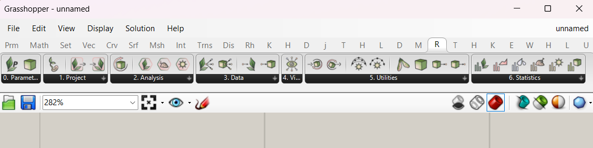
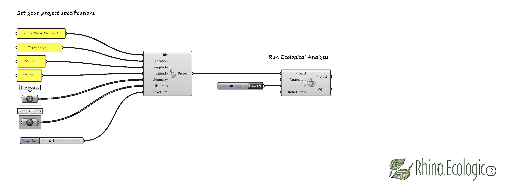
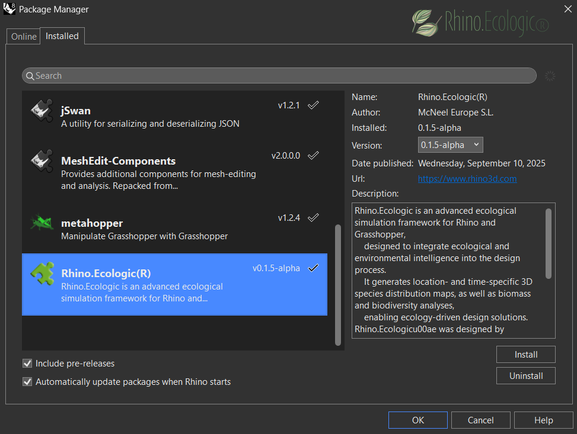
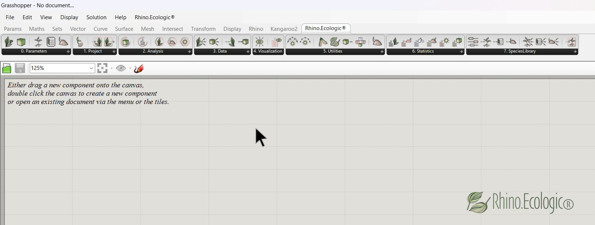

Rhino.Ecologic®
Rhino.Ecologic® is an ecological simulation framework for Rhino and Grasshopper developed by McNeel Europe. It embeds dynamic vegetation modeling, biodiversity assessment, and biomass simulation directly into parametric design workflows — making ecological performance a measurable design parameter from the earliest stages of a project.
Capabilities
- Ecological analysis — spatiotemporal species distribution maps for terrain, building envelopes, and urban forms
- Biodiversity prediction — dynamic maps of potential plant species for a given design space
- Environmental mapping — soil, precipitation, and solar illumination maps derived from 3D geometry
- Data export — geometry-linked ecological datasets suitable for ML workflows and advanced analysis
Get started
| Quick Start | Install the plugin and run your first analysis |
| User Guide | Full reference for all components and workflows |
| Installation Guide | System requirements and setup instructions |
| Component Overview | All Grasshopper components at a glance |
| Model Guide | The underlying ecological model explained |
Partially funded by the European Commission under Horizon 2020 FET, Grant Agreement ID: 964414 (2021–2025). © 2025 McNeel Europe S.L. All rights reserved.
Quick-start guide for Rhino.Ecologic® 
Version: 0.1.7 alpha
Compatible with: Rhino 8+, Grasshopper
Platform: Windows
Release date: xx 2026
Draft: Verena Vogler
Rhino.Ecologic® is an advanced ecological simulation framework for Rhino and Grasshopper, designed to seamlessly integrate ecological and environmental knowledge into the architectural and design process. It enables users to model and ecologically analyze architectural projects. Outputs include location- and time-specific 3D species distribution maps, as well as biomass and biodiversity simulations.
This page provides quick start guidelines for the Rhino.Ecologic framework.
Step 1: Launch Rhino & Grasshopper
-
Open Rhino 8.
-
Go to File > Open in Rhino.
-
Open one of the sample
.3dmfiles located in the/examplesdirectory. The file is named “Rhino.Ecologic_Example_File.3dm” and here: https://drive.google.com/drive/folders/1-BJFjhQ7BCHT9mP9yyBOuZhKPZ1J2fXm -
Start Grasshopper by typing
_Grasshopperin the Rhino command line. -
Ensure the Rhino.Ecologic tab is visible in the Grasshopper ribbon.

*Loaded Rhino.Ecologic® toolbar in Grasshopper.*
The Rhino.Ecologic toolbar includes tabs such as:
- 00_Parameters
- 01_Project
- 02_Analysis
- 03_Data
- 04_Visualisations
- 05_Utilities
- 06_Statistics
- 07_Species Library
Tip: For more information on the Rhino.Ecologic® User Interface, see User Guide, Chapter 1 ([
link]).
Step 2: Load an example file
-
Go to File > Open in Grasshopper.
-
Open one of the example
.ghfiles located in the/examplesdirectory. The file is named “Rhino.Ecologic_Example definition.gh” and here: https://drive.google.com/drive/folders/1-BJFjhQ7BCHT9mP9yyBOuZhKPZ1J2fXm
Step 3: Set-up your Rhino.Ecologic Project
-
Set-up your
Rhino.Ecologic Project(P)by referencing your project in theCreate ProjectGrasshopper component. -
Set the project parameters such as the project’s
Title(T), the project’s geographicLocation (L)includingLongitude(Lon)andLatitude(Lat), and define theVoxel Size(VS). -
Reference your Rhino geometry (e.g., building, terrain 3D model) by right-clicking the
Geometry Parametercomponent and selectingSet one geometryorSet multiple geometries. You can also input your Grasshopper model. -
To run the environmental and ecological analysis on the entire project, leave the
Biophilic Areas(BA)input empty.
-
To analyze only specific regions of your project, reference a
bounding box(or multiple boxes) around those areas to theBiophilic Areasinput.

Step 4: Run ecological analysis
-
To run the ecological analysis, use the default settings for
ParametersandCustom Libraryin theRun Ecological Analysiscomponent. -
To start the environmental and ecological analysis pipeline, set the
Runboolean toggle fromFalse(analysis inactive) toTrue (analysis active). -
The
Run Ecological Analysiscomponent outputs data associated with geometry, environmental, and ecological parameters, includingInclination,Soil Depth,Soil Volume,Soil Type,Solar, andBiodiversityanalysis results. -
Review the
Logoutput to ensure the analyses finished successfully.

-
Run a custom environmental and ecological analysis for your project using a custom
Plant Library. ThePlant Libraryis a JSON file. The JSON files for different geographic locations can be downloaded here: https://drive.google.com/drive/folders/1Z-OJwC5NY61Qaf6LhKkmaPWLYdzkRh0O -
Reference the JSON files using the absolute file path.

Step 5: Data outputs
-
Components in the Data tab return environmental and ecological data at the predefined resolution (
Voxel Size). The resulting data can be used for further processing and visualization in Grasshopper. -
Use the analyzed project output from the
Run Ecological Analysiscomponent as the input for theDeconstruct Voxelcomponent. Retrieve the data outputs for the different categories: geometry (Id,Mesh,Position,Size,Inclination), environmental (Solar,Soil Depth,Soil Volume,Soil Type,Precipitation), ecological (Timestamp,Species,Biomass,Abundance/Biodiversity,Plant Volume). -
Access the analysis data outputs for your project using the
Get Voxels by Typecomponent. SelectExterior Envelopeto obtain the results for your project’s outer envelope.

- Adjusting the
Time Step(years) input in theDeconstruct Voxelcomponent returns ecological results for each year of the simulation.

Step 6: Visualize & export
-
Use standard Grasshopper components such as
Domainsfrom the Math tab,Gradientfrom the Params tab, andCustom Previewfrom the Display tab to visualize the data outputs in Rhino. -
Use the provided components to visualise the
Solaranalysis results on your project in Rhino.

- Use the provided components to visualise the
Soil Depthanalysis results on your project in Rhino.

- Use the provided components to visualise the
Plant Volumeanalysis results on your project in Rhino.

-
Save your Rhino.Ecologic Project using the Save Project Grasshopper component in the Project tab.
-
For more details on customizing your analysis setup, and information on ecological analysis, see the Rhino.Ecologic User Guide.
Help and feedback
If you encounter any issues or have questions, feel free to reach out. Please share your feedback, bug reports, or feature requests using this short form:
Submit Feedback
Referencing
When referring to Rhino.Ecologic® in a scientific publication, cite as follows:
Vogler, V., Kourkopoulos, E., Fraguada, L., Mimet, A., & Joschinski, J. (2025). Integrating ecological modeling into the 3D CAD system Rhinoceros. JoDLA – Journal of Digital Landscape Architecture, Issue 10–2025, 86–100. Berlin/Offenbach: Wichmann Verlag im VDE VERLAG. e-ISSN 2511-624X. https://doi.org/10.14627/537754009
Vogler, V., Kourkopoulos, E., Joschinski, J., & Eckelt, K. (2025). Developing volumetric data models for ML training datasets using Grasshopper. JoDLA – Journal of Digital Landscape Architecture, Issue 10–2025, 101–113. Berlin/Offenbach: Wichmann Verlag im VDE VERLAG. e-ISSN 2511-624X. https://doi.org/10.14627/537754010
Eleftherios, Jens, and Verena.
© 2025 McNeel Europe S.L. All rights reserved.
RHINO.ECOLOGIC® Grasshopper components overview
RHINO.ECOLOGIC® is an advanced ecological simulation framework for Rhino and Grasshopper, designed to seamlessly integrate ecological and environmental knowledge into the architectural and design process. It enables users to model and ecologically analyze architectural projects. Outputs include location- and time-specific 3D species distribution maps, as well as biomass and biodiversity simulations.
This page provides an overview of the Grasshopper components included in the RHINO.ECOLOGIC® framework. Here, you will find descriptions of project components, parameters, data and analysis components, as well as utilities and preview tools, each detailing its function and role within broader workflows. Under the debug components section, you’ll find a few tools used during the development process for debugging purposes (debug version).
Logo
 or
or 
00 Parameters:
| GH Icon | Feature | Category/ Subcategory | Description |
|---|---|---|---|
| Project (P) | Rhino.Ecologic® / Parameters | Represents a Rhino.Ecologic project. The component stores and passes the data of your Rhino.Ecologic project. | |
| Voxel (V) | Rhino.Ecologic® / Parameters | Represents a space boundary with specific attributes. This component stores and passes all data associated with each voxel in your Rhino.Ecologic project. | |
| Plant (PL) | Rhino.Ecologic® / Parameters | Represents a description of a plant. | |
| Plant Library (PLL) | Rhino.Ecologic® / Parameters | Represents a set of plants comprising a library. | |
| Soil Set (S) | Rhino.Ecologic® / Parameters | Represents a set of soils that can provide a nuturing environment for a plant. |
01 Project components:
| GH Icon | Feature | Category/ Subcategory | Description | Input parameters | Output |
|---|---|---|---|---|---|
| Create Project (CP) | Rhino.Ecologic® / Project | Constructs a new Rhino.Ecologic project for analysis. The components converts geometry to mesh, voxelizes the bounding volume, and separates the graph into subgraphs such as interior and exterior envelopes.object. | Title, Location, Longitude, Latitude, Geometry, Biophilic Area, Voxel Size | Rhino.Ecologic Project | |
| Import Project (IP) | Rhino.Ecologic® / Project | Imports a project from a binary (.bph) file. Json deserialization is supported in the debug version. | Project Path | Rhino.Ecologic Project | |
| Save Project (SP) | Rhino.Ecologic® / Project | Saves a project as a binary (.bhp) file. Json serialization is supported in the debug version. | Project, Save Directory, Serialize | Rhino.Ecologic Project |
02 Analysis components:
| GH Icon | Feature | Category/ Subcategory | Description | Input parameters | Output |
|---|---|---|---|---|---|
| Run Ecological Analysis (EA) | Rhino.Ecologic®/ Analysis | Runs a configurable pipeline of analysis. This pipeline includes solar, soil, precipitation and biodiversity analysis, allowing for configuratiion (which analyses are run). | Project, Parameters, Run, Custom Library | Rhino.Ecologic Project, Log | |
| Biodiversity Parameters (BP) | Rhino.Ecologic®/ Analysis | Creates a set of parameters for the biodiversity analysis. | Simulation Duration, Strata Number, Starting Population Size, Initial Seed Count, Soil Capacity, Rain Seed, Light Factor, Diffusion, Does Dispersal, Does Soil Class, Does Soil Depth, Does Regional Model, Does Disturbance, Fix RNG | Parameters | |
| Solar Parameters (SP) | Rhino.Ecologic®/ Analysis | Creates a set of customized analysis parameters to configure the solar analysis execution including radiation and daylight analysis. | Hour Interval, Annual Frequency, Noon Hour, Day of Year, Plot Scale, Accumulative, Analysis Type, Analysis Span, Max Voxel Count, Max Depth, Min Surface Area | Parameters | |
| Soil Depth Parameters (SDP) | Rhino.Ecologic®/ Analysis | Creates a set of customized analysis parameters to configure the soil depth analysis execution. | Lower Height Depth | Parameters | |
| Run Data Analysis (DA) | Rhino.Ecologic®/ Analysis | Runs the data analysis pipeline and produces visualizations. | Rhino.Ecologic Project, Run | Bitmaps, Vector, Log |
03 Data components:
| GH Icon | Feature | Category/ Subcategory | Description | Input parameters | Output |
|---|---|---|---|---|---|
| Deconstruct Project | Rhino.Ecologic®/ Data | Deconstructs a project object to its constituent parts: Geometry-, solar-, precipitation-, soil-, and biodiversity related attributes. It only filters and outputs the voxels set by the user, e.g. only the exterior envelope voxels. | Rhino.Ecologic Project | Title, Id, Location, Longitude, Latitude, Elevation, North, Timestamp, Voxels, Mesh | |
| Deconstruct Voxel | Rhino.Ecologic®/ Data | Deconstructs a voxel to its constituent parts. | Voxel, Time Step | Id, Mesh, Position, Size, Inclination, Solar, Soil Depth, Soil Volume, Soil Type, Precipitation, Timestamp, Species, Biomass, Abundance, Plant Volume | |
| Set Project Data | Rhino.Ecologic®/ Data | Sets the value of the selected project field. | Project, Parameter, Value | Rhino.Ecologic Project | |
| Set Voxel Data | Rhino.Ecologic®/ Data | Sets the value of the selected voxel field. | Voxels, Analysis Type, Analysis Values | Voxels |
04 Visualization components:
| GH Icon | Feature | Category/ Subcategory | Description | Input parameters | Output |
|---|---|---|---|---|---|
| Visualize Analysis (VA) | Rhino.Ecologic®/ Visualization | Visualize the data of the analysis. | Project, Voxel Type, Attribute, Time Step, Show | Visualization | |
| Graph Display (GD) | Rhino.Ecologic®/ Visualization | Visualizes graphs in the form of a bitmap or svg. | Project Data | Graph Display |
05 Utilities components:
| GH Icon | Feature | Category/ Subcategory | Description | Input parameters | Output |
|---|---|---|---|---|---|
| Get Annual Sun Positions (ASP) | Rhino.Ecologic®/ Utilities | Calculates the sun positions of the location specified in the project. | Project, Annual Frequency, Hour Interval | Sun Positions | |
| Get Daily Sun Positions (DSP) | Rhino.Ecologic®/ Utilities | Gets the sun positions of the location specified in the project on the specific day. | Project, Day | Sun Positions | |
| Get Biophilic Voxels (GBV) | Rhino.Ecologic®/ Utilities | Gets voxels marked as biophilic. | Project, Day | Voxels | |
| Get Plant Voxels (GPV) | Rhino.Ecologic®/ Utilities | Gets all the voxels that have valid biomass values. | Project, Time Step | Voxels, Time Step | |
| Get Voxel Value (GVV) | Rhino.Ecologic®/ Utilities | Gets a specific analysis value of the voxel. | Voxel, Analysis Type, Time Step | Value | |
| Get Voxels By Type (SVD) | Rhino.Ecologic®/ Utilities | Sets the value of the selected voxel field. | Voxel, Analysis Type, Analysis Values | Voxels |
06 Statistics components:
| GH Icon | Feature | Category/ Subcategory | Description | Input parameters | Output |
|---|---|---|---|---|---|
| Get Biodiversity Summaries (BS) | Rhino.Ecologic®/ Statistics | Performs descriptive analysis on the biodiversity attributes of a project and returns its summary statistics. | Project | Minimum, Maximum, Average, Median | |
| Get Inclination Summaries (IS) | Rhino.Ecologic®/ Statistics | Performs descriptive analysis on the inclination attributes of a project and returns its summary statistics. | Project | Minimum, Maximum, Average, Median | |
| Get Precipitation Summaries (PS) | Rhino.Ecologic®/ Statistics | Performs descriptive analysis on the preciptitaion attributes of a project and returns its summary statistics. | Project | Minimum, Maximum, Average, Median | |
| Get Soil Summaries (SS) | Rhino.Ecologic®/ Statistics | Performs descriptive analysis on the soil attributes of a project and returns its summary statistics. | Project | Minimum Soil Depth, Maximum Soil Depth, Average Soil Depth, Median Soil Depth, Minimum Soil Volume, Maximum Soil Volume, Average Soil Volume, Median Soil Volume, Soil Type Distribution (Types), Soil Type Distribution (Count) | |
| Get Solar Summaries (SS) | Rhino.Ecologic®/ Statistics | Performs descriptive analysis on the solar attributes of a project and returns its summary statistics. | Project | Minimum Soil Depth, Maximum, Average, Median | |
| Get Voxel Summaries (VS) | Rhino.Ecologic®/ Statistics | Performs descriptive analysis on the voxel attributes of a project and returns its summary statistics. | Project | Biophilic Areas Count, Type Distribution (Types), Type Distribution (Count), Voxel Index, Degree Centrality |
07 Species Library components:
| GH Icon | Feature | Category/ Subcategory | Description | Input parameters | Output |
|---|---|---|---|---|---|
| Compute Preset Values (CPV) | Rhino.Ecologic®/ Species Library | Calculates values for a plant definition provided presets. | Life Span, Growth Form, Leaf Form, Shade Tolerance | Maturation Time, Rooting Depth, Size, Opacity, Shade Tolerance | |
| Create Plant (CPL) | Rhino.Ecologic®/ Species Library | Creates a plant definition. | Name, Max Geight, Width, Crown Width, Life Span, Growth Form, Maturation Time, Rooting Depth, Size, Soil Set, Germination Rate, Opacity, Conversion Efficiency, Shade Tolerance | Plant | |
| Create Plant Library (CPLL) | Rhino.Ecologic®/ Species Library | Creates a plant library provided a series of plant definitions. | Name, Plants | Plant Library | |
| Create Soil Set (CSS) | Rhino.Ecologic®/ Species Library | Creates a soil set for a plant definition. | Accepted Soils | Soil Set | |
| Deconstruct Plant (DPL) | Rhino.Ecologic®/ Species Library | Deconstructs a plant to its consituent parts. | Plant | Name, Max Height, Life Span, Maturation Time, Rooting Depth, Size, Soil Set, Dormancy, Dormancy Break Rate, Germination Success, Max Biomass, Density, Biomass Allocation | |
| Deconstruct Plant Library (DPLL) | Rhino.Ecologic®/ Species Library | Soils contained in the soil set. | Project Data | Graph Display | |
| Deconstruct Soil Set (DSS) | Rhino.Ecologic®/ Species Library | Visualizes graphs in the form of a bitmap or svg. | Soil Set | Soils | |
| Export Plant Library (EPLL) | Rhino.Ecologic®/ Species Library | Imports a plant library. | Library Path | Plant Library | |
| Save Plant Library (SPLL) | Rhino.Ecologic®/ Species Library | Saves a plant library to a file. | Plant Library, Save Directory, Save | - |
Debug:
| GH Icon | Feature | Category/ Subcategory | Description | Input parameters | Output |
|---|---|---|---|---|---|
| - | xx | xx | xx |
old
Debug components
| GH Icon | Feature | Description | Input parameters | Output parameters |
|---|---|---|---|---|
| Variable Parameter Component | Used to test and debug variable parameter component features. | |||
| Serialize Mesh | Serializes a mesh, using Rhino’s default mesh serialization functionality. | |||
| Deserialize Mesh | Deserializes an encoded string to a mesh object, using Rhino’s default mesh serialization functionality. | |||
| Get Envelope Mesh | Gets the envelope mesh, by shrink wrapping (target length 0.1) and quad remeshing (target length 0.5) the provided meshes. | |||
| Run Rhino.Compute Definition | Runs an analysis definition using Rhino.Compute. |
Experimental components
| GH Icon | Feature | Description | Input parameters | Output parameters |
|---|---|---|---|---|
 | Deconstruct Project VP | Deconstructs a project to its constituent parts, having variable output pins that can be added or removed. | ||
| Deconstruct Voxel VP | Runs the analysis pipeline on a different thread (not blocking the UI thread) and reports the progress of the pipeline. | ||
| Run Analysis Async | Runs the data analysis pipeline and produces visualizations. | ||
| Run Data Analysis | Runs the inference on the trained ML model and outputs the predicted project values. |
Extra
| GH Icon | Feature | Description | Input parameters | Output parameters |
|---|---|---|---|---|
| Precipitation | Custom definition of precipitation. | |||
| Param | Custom definition of parameters. | |||
| Soil Type | Custom definition of soil type. | |||
| Soil Depth | Custom definition of soil depth. |
© 2025 McNeel Europe S.L. All rights reserved.
Developer guide for RHINO.ECOLOGIC® 
RHINO.ECOLOGIC® is an advanced ecological simulation framework for Rhino and Grasshopper, designed to seamlessly integrate ecological and environmental knowledge into the architectural and design process. It enables users to model and ecologically analyze architectural projects. Outputs include location- and time-specific 3D species distribution maps, as well as biomass and biodiversity simulations.
This page provides development guidelines for the RHINO.ECOLOGIC® framework. (…)
1. Architecture
C++/C# layout, module structure
2. Interoperbility
C# <-> C++ interoperability details
3. API reference
Key functions, classes, interfaces
4. Contributing
How to build, contribute, submit PRs

Parts of this research and the development of Rhino.Ecologic® were supported by the European Commission under Horizon 2020 EXCELLENT SCIENCE – Future and Emerging Technologies (FET), Grant Agreement ID: 964414 (2021–2025).
© 2025 McNeel Europe S.L. All rights reserved.
Installation guide for RHINO.ECOLOGIC®
Version: 0.1.7 alpha
Compatible with: Rhino 8+, Grasshopper
Platform: Windows
Release date: xx 2025
Draft: Verena Vogler
Rhino.Ecologic® is an advanced ecological simulation framework for Rhino and Grasshopper, designed to seamlessly integrate ecological and environmental knowledge into the architectural and design process. It enables users to model and ecologically analyze architectural projects. Outputs include location- and time-specific 3D species distribution maps, as well as biomass and biodiversity simulations.
This page provides installation guidelines for the Rhino.Ecologic framework.
System requirements
Processor: A 64-bit Intel or AMD processor
RAM: 8 GB of RAM is the minimum, but 16 GB or more is recommended for larger models and smoother performance.
Operating System: Windows 11, or 10
Graphics Card: OpenGL 4.1 capable video card with 4 GB of video RAM
Storage: 600 MB
Rhino Version: Rhino 8 + https://www.rhino3d.com/download/
Grasshopper: pre-installed with Rhino
.NET Framework: 4.8 or later
Internet: Required for license activation and updates
Step 1: Download the plugin
Download the latest version of Rhino.Ecologic® from the official website, the project repository (YAK file) or the _PackageManager:
📦 rhino.ecologic(r)-0.1.7-alpha-rh8_8-any.yak
currently here: https://drive.google.com/drive/folders/1UQag6aRlAhbvV7UQ6EGf8YgF-_a5jnW0
In the next step, drag and drop it into Rhino. Rhino.Ecologic (alpha) will install automatically.
In Rhino, type _PackageManager into the command line to open the Rhino Package Manager.
Confirm that Rhino.Ecologic is listed and properly installed.

Rhino.Ecologic® in the Rhino Package Manager.
Restart Rhino & Grasshopper to complete installation. The installation files should install automatically in the following repository:
C:\Users\<UserName>\AppData\Roaming\Grasshopper\Libraries\Rhino.Ecologic\<version>
Step 2: Activate toolbar
Launch Grasshopper and new tab called “Rhino.Ecologic®” will appear in the Grasshopper ribbon.

Loaded Rhino.Ecologic® toolbar in Grasshopper.
Step 3: Verify installation
To check whether everything works drag one Rhino.Ecologic Grasshopper component (e.g., Run Ecological Analysis) onto the Grasshopper canvas.

The Run Ecological Analysis Grasshopper component loads correctly. You should see tooltips and icons correctly rendered.
Test basic connectivity with the example model provided in /examples folder: https://drive.google.com/drive/folders/1-BJFjhQ7BCHT9mP9yyBOuZhKPZ1J2fXm)
Troubleshooting
Common warnings/errors + fixes.
| Issue | Solution |
|---|---|
| Toolbar does not appear | Ensure .gha file is unblocked (Right-click → Properties → check “Unblock”) |
| Errors on load | Update Rhino to the latest stable version and restart your system |
| Error message DLL NOT FOUND | ENSURE BOTH DLLS ARE PRESENT: BiophiliaAPI.dll and plants.dll must be in the same directory; Your application executable should be in the same directory. CHECK FILE PROPERTIES: Right-click each DLL -> Properties -> Unblock (if present); Ensure both DLLs have the same architecture (both 32-bit or both 64-bit) IF PROBLEM PERSISTS: 1. Run this application as Administrator; 2. Temporarily disable antivirus software; 3. Check Windows Event Viewer for additional error details; 4.Copy runtime DLLs to application directory as last resort |
Example files
Located in the /examples directory: https://drive.google.com/drive/folders/1-BJFjhQ7BCHT9mP9yyBOuZhKPZ1J2fXm
- Example GH files (
.gh) - Example Rhino file
- Example custom plant libraries (.json files)
Help and feedback
If you encounter any issues or have questions, feel free to reach out. Please share your feedback, bug reports, or feature requests using this short form:
Submit Feedback
Referencing
When referring to Rhino.Ecologic® in a scientific publication, cite as follows:
Vogler, V., Kourkopoulos, E., Fraguada, L., Mimet, A., & Joschinski, J. (2025). Integrating ecological modeling into the 3D CAD system Rhinoceros. JoDLA – Journal of Digital Landscape Architecture, Issue 10–2025, 86–100. Berlin/Offenbach: Wichmann Verlag im VDE VERLAG. e-ISSN 2511-624X. https://doi.org/10.14627/537754009
Vogler, V., Kourkopoulos, E., Joschinski, J., & Eckelt, K. (2025). Developing volumetric data models for ML training datasets using Grasshopper. JoDLA – Journal of Digital Landscape Architecture, Issue 10–2025, 101–113. Berlin/Offenbach: Wichmann Verlag im VDE VERLAG. e-ISSN 2511-624X. https://doi.org/10.14627/537754010
Eleftherios, Jens, and Verena.
© 2025 McNeel Europe S.L. All rights reserved.
Guide on the Joschinski Model —an individual-based community model
Version: 1.2.9
Compatible with: RHINO.ECOLOGIC® for Rhino 8+
Platform: Windows
Release date: xx 2025
Draft: Jens
Rhino.Ecologic.PlantModel simulates the presence and change of plant communities over time. It models key ecological processes and tracks the biomass and number of plant individuals from multiple species.
Introduction
Ecological processes are complex. Plants require various resources to grow (e.g. light, water, nutrients); the environment must meet certain conditions (e.g. pH, temperature range); and plants interact with each other (e.g. competition for light) and with other organisms (e.g. root mycorrhiza). Moreover, the biotic and abiotic factors interact with each other in complex ways. For example, warm temperature increases evaporation rates of trees and thus may reduce available water for shallow-rooting grasses - the water stress may then reduce defenses against herbivores. For these reasons, predicting ecological community dynamics requires substantial analytical or modelling efforts.
A common class of modelling tools are agent-based simulations, also called individual-based models in ecology. These models simulate the life of individual organisms and their interactions with each other and with the environment, including stochastic processes. As with other complex adaptive systems, the outcome of ABMs is more than the sum of its parts, and results could not be guessed from the simple individual-level rules. While states or locations of individuals are meaningless on their own, ABM’s provide higher-level insights into the system.
In Rhino.Ecologic, we apply an individual-based model to simulate plant community dynamics. The model simulates the life of individuals from multiple species and provides information about the spataial distribution of species, as well as their temporal succession.
Note
The model is stochastic.
1 Aims and Capabilities
The plant model of Rhino.Ecologic is an agent-based model that simulates individual plants. It applies key ecological processes such as growth, competition for light, reproduction, seed dispersal and death, and tracks the states of the plants throughout. As outcome it reports the change in biomass, plant volume and plant numbers (species-specific), relative changes in species prevalence (community composition) over time, and their spatial patterning.
2 Scale
The model is flexible regarding input scale and resolution, but performs best for sites that lie between 100 and 10000 m² (small house to university campus). It models the change of the plant community over time, applying annual time steps for approximately 10-20 years. It can be used to understand establishment of communities and successional dynamics, but not events at shorter (weather, seasonality) or longer time scales (climate change, evolution). The spatial resolution is by default 1 m³, but coarser resolutions can also be used for larger sites. Internally the model applies a finer resolution for shade calculations (5 cm in z-direction), but this information is not meant for interpretation purposes and not provided via the Grasshopper interface.
Caution
Do not change the resolution yet, work in progress
3 Processes and main concepts

- 3-dimensional plant growth
- competition for light
- suitability of the soil, including soil type and soil depth
Other important processes such as nutrient limitation, drought, herbivory and management are not included (yet).
4 Core logic and theory
This section summarises the concepts of the model on a high level only. For details see [insert link to ODD]
4.1 Plant individuals
The principle agent is an individual plant. The plant has two life stages: a seed stage and the actual plant individual.
The individual has the following attributes:
- it lives: it grows, reproduces and dies.
- it is photoautotrophic: it converts light into a (carbohydrate) resource; it lives from these resources and produces green (photosynthetically active) biomass and seeds.
- it has a shape: it has a geometric representation, being able to e.g. cast a shade with its biomass. Plants can be cylinders, cones or ellipsoids, optionally resting on an (invisible) stem.
- it needs a place to live: the soil determines whether a plant can grow at all (habitat is suitable). Soil (space) is a limiting resource.
- it interacts with the environment: Stressors can affect each of the above properties, i.e. cause mortality, deplete resources or affect the soil.
The seeds have the following attributes:
- they live: they can die, or they can be converted into individuals
- they can form seed banks: Seeds produced in autumn may germinate the next year, or they can stay dormant and be buried in the soil for many years. The mortality of dormant seeds is lower than the mortality of active seeds that attempt to germinate (germination rate)
- they need space: the soil can accomodate a potentially large, but not infinite number of seeds.
The attributes are naturally interdependent. Yet, in the model the interdependencies are kept to a minimum, both to constrain the logical complexity of the model, and to keep the model modular and modifiable. The following interdependencies exist:
- plants only germinate on suitable soil types; they stop collecting resources if the soil becomes unsuitable, i.e. when roots exceed the soil depth;
- plants that run out of resources die;
- seed production (fecundity) only starts at maturity age, and requires resources.
- the general shape of the plant and its growth affect where green biomass is placed. This determines how much it shades others, and how much it is being shaded. Shading in turn affects resource acquisition.
In summary, the model simulates germination and seed dispersal, growth, resource allocation, shading, soil suitability and environmental stress [not yet].
4.2. Light
Plants must be hit by light to collect energy resources. The amount of intercepted light depends on 1) the amount of solar energy hitting each voxel [link to Rhino.Grasshopper here], and 2) the amount of light that is intercepted by other plants or plant parts. For simplicitly, the model currently calculates the plant material growing above each target voxel and reduces the solar energy proportionately (often by 100%). Future iterations of the model will incorporate angular or diffuse light as well.
Warning
Trees and other larger plants will often block any incoming light for the plants growing below. We are working on a solution.
5. Typical life of a plant in the model
- The life of a plant starts as a seed. The seed may have been produced by another plant in previous year(s), or might have randomly dropped from elsewhere outside the modelled site (“seed rain”). If the seed is non-dormant and lands on suitable soil, and there is enough space left, there is a good chance that it germinates.
- Once germinated, the plant grows with a fixed growth trajectory (fig. x). The growth trajectory is determined by its lifespan and an inflection point at which growth slows down. The inflection point is also the point where the plant becomes mature and can produce its own seeds. Different growth forms (e.g. grasses or trees) have different presets for maturation time to ensure reasonable growth patterns. Shade-tolerant plants are generally slower growers.
- As the plant grows, 3D leaf volume is placed in voxels, and depending on shape the plant assumes a conical/spherical/cylindrical bounding box. The leaves can intercept sunlight and use the resources for growth, production of seeds (if mature) and general maintenance. Resource acquisition stops though if the plant roots become too deep for the soil in which it roots.
- As long as the plant is not growing in shade, or shaded by larger plants, the plant should have enough resources to survive, grow further, and produce seeds. If the plant gets severely shaded, its bounding box continues to grow, but the leaf material within that bounding box may no longer keep up with the growth. As a result, the plant is less dense, cannot collect enough resources, falls further behind and eventually dies. Sometimes the shade is not persistent and the plant can recover though: 1) when a larger plant dies or when the lower plant grows faster than the larger one, it can continue collecting resources; 2) when shading is caused by a built structure (e.g. small wall), the plant may also outgrow it before its resources are used up; 3) when two plants overlap within a voxel (layer), a random leaf lies on top and gets the light; in the next year, our focal plant may get the upper hand again.
- Different plant species vary in growth rates, shade tolerance, seed production and other traits. At some point, our focal plant may be outgrown by some plant that is more competitive or more shade tolerant, or simply more lucky. If not, it will at some point reach the end of its lifespan and die.
6 Creating custom plant libraries
With approx. 300,000 plant species worldwide, it is impossible to parametrize the model for every possible scenario. Rhino.Ecologic ships hence with a default set of common european plant species [currently not many, to be extended]. These species can be interpreted as main representants of a more general type of plants with similar ecological characteristics (functional types/functional groups). For example, “Holcus lanatus” represents fast-growing and rather large, not very shade-tolerant grasses. Nevertheless, some distinct plant shapes or groups are not included in the default plant library (e.g. elephant grass, palms or cacti). We thus provide tools to create your own custom plant definitions.
6.1 Description of the custom plant library tool
To ease the use of the library tool, we limited the number of absolutely required information to the bare minimum:
- plant height in cm
- diameter of the plant (stem diameter for shrubs and trees)
- crown diameter (for shrubs and trees only)
- life span in years
- growth form, i.e. grass, herb, shrub, deciduous or evergreen tree
- shade tolerance: low, medium or high
- soil tolerances
The information is mostly readily available online (e.g. Wikipedia) or can be estimated. With this information one can make educated guesses of remaining required inputs (use the compute Presets component, fine-tune the results if needed). The result is a definition of the plant in layman’s terms. The Plant component now imputes the actual ecological and physiological traits that are used by the model. These include, among others, allocation strategy, photosynthetic efficiency and a volume-to-biomass conversion ratio. The raw traits are on purpose hidden from the UI, because they can be easily misinterpreted, causing physiologically or ecologically implausible plant definitions and wrong results. They can be viewed (read-only) by using the Deconstruct Plant component, and the underlying assumptions can be found in the detailed model description [link model_description].
Glossary
References
Joschinski J., Boulangeat I., Calbi M., Hauck T.E, Vogler V., Mimet A. (2024). The Ecolopes Plant Model: a high-resolution model to simulate plant community dynamics in cities and other human-dominated and managed environments. bioRxiv 2024.09.23.614561.
Parts of this research and the development of Rhino.Ecologic® were supported by the European Commission under Horizon 2020 EXCELLENT SCIENCE – Future and Emerging Technologies (FET), Grant Agreement ID: 964414 (2021–2025).
0 Preface
The model description follows the ODD (Overview, Design concepts, Details) protocol for describing individual- and agent-based models (Grimm et al. 2006), as updated by Grimm et al. (2020).
1 Purpose and Patterns
The model aims to predict the presence and temporal change of plant communities in 3dimensional environments. It tracks the number and biomass of plant individuals from multiple species.
The main proceesses are 1) tracking of habitat suitability, seperately for each species, based on soil properties, and 2) modeling competition for light via: individual plant growth; a light interception model; conversion of light energy into carbohydrate resources; and allocation of said resources into growth and reproduction. Biomass growth in turn increases light interception and leads to shading of other plants.
Habitat suitability, growth and light requirements are species-specific. The species traits are usually inputted by the user; although care is taken to ensure the traits are within reasonable limits, the validity of the model output depends heavily on the quality of the input traits.
The simulation is a pure ecological model and does not include evolutionary processes. It is not expected to perform well in highly stochastic environments (e.g. erratic herbivore pressure) or in environments under soil nutrient limitation, as these processes are not included in the model.
2 Entities, state variables, and scales
Spatial and temporal resolution
This model simulates plant communities in urban areas, in particular on building envelopes. It is envisioned to be used on spatial extents of 10 x 10 m - 200 x 200 m, at input resolution of 1m³, and to simulate 10-200 annual time steps. The model internally uses a finer resolution in z - direction (5 cm) to boost the accuracy of light and shading calculations, but outputs are aggregated to the input resolution.
It is a parametric model, meaning the user can change extent and resolution at will, but:
- not all inputs are scaled with resolution yet (e.g. maximum number of plants per voxel), leading to potentially wrong results.
- Seasonal change or leaf senescene are not modelled, so time steps below one year are not supported.
- finer resolutions or larger extents may deplete memory and increase run time.
In summary, best results are obtained at 1 m³ voxel resolution and annual time steps. If deciding to nevertheless change the spatial resolution, it is advised to adjust the amount of layers (noStrata) to keep a 5 cm resolution in z-direction. A coars resolution in xy-directions (e.g. 10x10m) but fine resolution in z-direction is a compromise that reduces data and memory footprints but not runtime.
[subject to change; NoStrata and other parameters to scale with resolution in future versions]
Entities
This chapter provides a conceptual overview of the entities that make up the model. Implementation details may differ in details, but code and concepts are matched wherever possible. For easier understanding of code-concept relationships, differences are indicated by footnotes.
| Entity | Description |
|---|---|
| Environment | (urban) habitat containing voxels; light; and seeds that are not (yet) settled in voxels |
| Voxel | a voxel may contain light; soil; and disturbances. A Community is associated with each Voxel that contains soil |
| Community1 | Contains Individuals and seeds of different species. Associated with a voxel and its soil, but individuals can outgrow the voxel boundaries. |
| Species/Traits | A “species” is a set of traits2,3 defining 1) Life history parameters, 2) resource allocation strategies, 3) seed biology, 4) disturbance response, 5) soil requirements and 6) shape.2 |
| Individual | Roots in soil; located in/across Voxels; can grow, reproduce and die (subject to voxel attributes). Composed of leaf biomass and (belowground) resources. Biomass converts intercepted light into resource, resource is invested in biomass and reproduction. Uses soil and light resources (casting shade), and can be disturbed. Individuals of different species differ in traits. |
1 Conceptionally associated with voxel, but coded as component of Voxel.
2 “Species” can also represent plant functional type, Functional group or distinct population
3 No separate Species class is required in the code. Each individual is associated with one rule set (“belongs to a species”). Pointers to an immutable Traits library are used for performance reasons (flyweight pattern). There are as many Trait instances as species.
Individuals and seeds
The principle agent is an individual plant. The plant has two life stages: a seed stage and the actual plant individual.
The individual has the following attributes:
- it lives: it grows, reproduces and dies.
- it is photoautotrophic: it converts light into a (carbohydrate) resource; it lives from these resources and produces green (photosynthetically active) biomass
- it has a shape: it has a geometric representation, being able to e.g. cast a shade with its biomass
- it needs a place to live: the soil determines whether a plant can grow at all (habitat is suitable). Soil (space) is a limiting resource.
- it interacts with the environment: Stressors can affect each of the above properties, i.e. cause mortality, deplete resources or affect the soil.
The seeds have the following attributes:
- they live: they can die, or they can be converted into individuals
- they can form seed banks: Seeds produced in autumn may germinate the next year, or they can stay dormant and be buried in the soil for many years. The mortality of dormant seeds is lower than the mortality of active seeds that attempt to germinate (germination rate)
- they need space: the soil can accomodate a potentially large, but not infinite number of seeds.
The attributes are naturally interdependent. Yet, in the model the interdependencies are kept to a minimum, both to constrain the logical complexity of the model, and to keep the model modular and modifiable. The following interdependencies exist:
- plants only germinate on suitable soil types; they stop collecting resources if the soil becomes unsuitable;
- plants that run out of resources die;
- seed production (fecundity) only starts at maturity age, and requires resources.
- the general shape of the plant affects where green biomass will be located. This affects resource acquisition and tolerance to shading.
The following interdependencies were on purpose not implemented:
- no maternal effects: life-history (age, height) and resource state do not affect seed biology, and plant growth is not affected by seed states.
- no phenotypic plasticity: age does not affect resource acquisition, and resource availability does not affect height growth.
- no soil quality: resource acquisition does not scale with soil variables, and soil is not conditioned by the plants or seeds living in it.
In particular, the plant’s bounding box / bounding box growth (growth model) are entirely deterministic and unaffected by resources; the biomass within that bounding box, and hence the shade it casts, may however vary by plant health state.
Disturbance is not fully implemented, but it may independently affect resources and/or biomass, life history (height or mortality), seeds and soil. Priority will be given to disturbance affecting biomass and resources.
Species/Traits
There is no single optimal strategy for life history, resource allocation and other attributes, rather the optimal strategy depends on the environment and the other individuals in the community. Hence, different trait combinations (species) have evolved. This model does NOT simulate inter-individual variation and/or inheritance (evolutionary model), but rather assumes that each individual belongs to a certain strategy type (species) with fixed traits. Individuals vary in states (e.g. current age), but there is no intraspecific trait variation (e.g. life span), no evolution and no phenotypic plasticity. Trait types may be envisioned as species, but can also be genera, distinct subpopulations, functional groups or functional types.
According to the attributes of Individuals and seeds given above, traits that define an individual fall into 6 categories:
- Life history parameters. Life history determines key demographics (maturity onset, lifespan) and growth.
- resource allocation strategies. Resource allocation determines the relative investment into seeds and biomass gain (e.g. light conversion efficiency, fecundity).
- soil requirements. Plants can only grow on certain types of soil, and the soil needs to meet some minimum requirements (minimum depth).
- disturbance response. Disturbance response defines which types of disturbance (“rabbit herbivory”, “tree pruning”) affect the plant, and how strongly.
- seed biology. The seed biology determines the mortality of seeds, dormancy attributes, and germination rates.
- shape. The shape determines the spatial distribution of biomass.
For details on the state variables, see section 7 (“submodels”) or UML diagram.
Voxels
A voxel is a three-dimensional object that is embedded in a 3D-landscape. In our model it contains a soil, a plant community, and light (and disturbance, to add).
Soil
Soil is a shared resource that is used by the Individuals, especially upon germination. It has a limited capacity to host plant individuals and its state may change over time. Some attributes are set at initialization and cannot change throughout the simulation run.
Soil is not represented as 2- or 3Dimensional object, but as an object with one-dimensional properties (depth, type, capacity, water availability); stratification of soil types is not yet included.
Although technically possible, it is currently not expected that a single soil spans multiple voxels. Future extensions (e.g. nutrient or water flow) may have to carefully revise this decision.
The plant community
The plant community is made up of the Individuals and seeds. Although the plant community and all its individuals have their home in one voxel, they can outgrow it in both x/y and z-direction (see section “environment”).
Environment
The Environment contains Voxels in a spatial configuration, and plant individuals live in, and across, these Voxels. The environment takes care of calculating the amount of plant material in each voxel; intersecting light rays with the plant material; and attributing the according light energy to the plants. Light calculations also take the (built) 3D environment into account. For details see submodel “light model”
In addition, the Environment contains a pool of “unsettled” seeds. After each time step, the seeds produced by all mature individuals are collected. They do not immediately sink to the ground of their home voxels, but are reshuffled and distributed (randomly and uniformly) across all voxels.
Disturbance to add
Notes
There are a few implementation-specific notes affecting the general logic of the model:
- The model is written with extensibility in mind. Replacing a submodel (e.g. resource calculation) should have minimal effects on the functionality of the remaining model.
- Soil has a “capacity” that is used to simulate competition for space, but no other attributes that may be depleted. Hence, plants of different types compete for the same singular resource.
- disturbance is not implemented yet.
- Raytracing is not implemented yet, and the current calculations are confusing in some edge cases (e.g. high plants growing next to a wall, growing from shaded into unshaded voxels; plants growing on south-exposed facades being shaded by plants growing above)
- Due to the existence of plant “home” voxels and individual soils that do not cross voxel boundaries, the minimum spatial resolution must be at the largest plant’s soil size requirement (i.e. stem diameter, or core root area). Plants cannot take a soil capacities from multiple voxels.
3. Process overview and scheduling

- A Graph with Voxels is created prior to running the model. The voxels store environmental attributes that are required by the model.
- The model is initialized with the graph and further configuration settings. It reads the trait definitions from a default file (or use data passed in via the plant library component), create a log file and perform checks on the input data. It further runs the 0th time step and discards the results.
- Once constructed, the model runs for a time step. This includes a simulation step (see fig. 1), and adding the results (volume, species names, biomasses and abundances) to the voxels.
- Step 3 is repeated for the desired number of time steps.
A time step consists of the following steps (see fig. 1):
- add and disperse seeds in the environment. A fixed seed rain “from the outside” is also added.
- move seeds from global environment pool to individual voxels.
- calculate plant spillage, i.e. locate plant material in the correct voxels according to plant shape and size.
- calculate light for each voxel, and distribute it to the plants
- update the plant community. The process includes aging, resource allocation, potentially death, production of new seeds and germination of assigned seeds.
- the seed output is limited to max. twice the nummber of voxels; the seeds are added to the environment.
The order ensures that new seeds may land in a cell and germinate in the same time step; but that the plant cannot additionally grow the same time step. It is also ensured that newly produced seeds disperse, but cannot germinate in the same time step.
Individual steps (such as seed dispersal) can be forced off, but this is usually unrealistic and not recommended.
4. Design concepts
Basic principles
The model combines habitat filtering approaches with process-based modelling, with particular focus on competition for light. The soil and nutrient balance as well as disturbance are on purpose left as simple and general as possible. The model is, however, written in a way that allows later extension.
Emergence and interaction
The key outcome of the simulation is the spatiotemporal change of community patterns, which emerges from the interaction of individuals within each voxel, particularly competition for light. Plant material outgrowing a voxel (i.e., large trees) can also cause very localized patterning. Abiotic factors (soil depth, soil class) further impose a general community structure via habitat filtering. The abiotic factors together lead to the emergence of complex environment-community relationships.
Adaptation
The model does not contain any direct objective-seeking mechanisms. The agents do not possess the ability to choose among two or more alternative behaviors e.g. via learning or condition-dependent rules (phenotypic plasticity).
Objectives
The model does not simulate adaptive behavior (fitness/biological evolution). The rules by which agents respond to the environment (the “genotypes” or traits) are instead provided by the user (default or via plant library component).
Interaction
Individual plants interact with one another, directly or indirectly, especially in the competition for light, which is explained in detail in the submodel section. Briefly, growth and death of plants continually changes light conditions, and, subject to light tolerances, plants may be outcompeted and die. This leads to turnover of plant communities. There is further simple competition for soil as a shared resource.
Stochasticity
The model contains the following stochastic processes:
- whenever there is free space in a voxel, plant individuals are picked randomly from the pool of suitable types, until each voxel’s capacity is reached. Their initial biomass is fixed (non-random).
- when the total plant biomass exceeds a voxel’s capacity, a random set of plant material is chooosen to lie “on top” and receive the light. The granularity of the draw (how much plant material to choose per draw/number of draws) can be adjusted.
- At the end of the time step, all plant seeds are pooled and randomly redistributed over the simulation environment, together with the seeds that enter from the region (seed rain). Growth rates, lifespan and soil suitability are fixed properties without random component.
5. Input and Output Data
A graph with Voxels is prepared prior to running the model, and it contains all neccessary information. At the moment, the information contains soil depth, soil type, light and precipitation in each voxel. Additionally, there are configuration settings and definitions of the Plant species (Traits). The model updates the voxels as it runs, adding for each time step:
- the total biomass of all plants rooting in the voxel, separately for each species
- the total abundance of all plants rooting in the voxel, separately for each species
- the total plant volume (independently of where plants root), summed across all species.
6. Initialization
At initalization each cell is filled with the according input data and with a starting Community. The Community created by randomly drawing from a list of suitable types until the capacity (or starting population) size is reached; an according seed pool is also created. Individuals are created as 0.1 year old plant (i.e. having roots, height and diameters of a 0.1-year old) and with enough resources to survive the first year.
The model runs additionally 1 time step upon creation, discarding the 0th time step.
7. Submodels
There are five independent submodels to simulate plant life (growth, resources, habitat suitability, shape and disturbance); one submodel for plant seeds; and two environmental submodels that handle seed dispersal and light calculations/raycasting.
Briefly put, the habitat suitability model restricts where a plant can grow; the growth model simulates change in plant growth; the resource model simulates the change in biomass; the shape model maps the plant biomass into 3d space; and the light model intersects the 3D plant with light beams, feeding the resource model with energy. The resource model additionally creates seeds that are dispersed by the seed dispersal model, potentially creating new individuals.
Plant growth
This submodel lets the plant age, mature and grow. The life history traits defining the plant’s growth are:
| Type | Trait | Description |
|---|---|---|
| float | MatAge | Age (in years) at which the plant reaches maturity and can start reproducing. Also used to estimate when plant growth decelerates |
| int | LifeSpan | Maximum age (in years) that a plant can reach, if not dying of other causes |
The plant’s age is incremented in every growth cycle; if it exceeds the life span, it dies. Age and life span are entirely deterministic (no random deviations or inter-individual variation).
The growth is resource-independent and uses a “TI form” of a Gompertz growth function (Tjorve 2017):W(t) = A * exp(-exp(-KG * (t - TI))) with with A= maximum size, TI = inflection point, KG = slope at inflection (growth rate), t = age
As inflection point we used the age of maturity (when plants invest into seeds, their growth decelerates). The growth rate is arbitrarily set to 1.998 / (LifeSpan - MatAge). The growth rate (i.e. slope, not max) is further reduced to 20% when water provision is insufficient (see habitat suitability submodel).
Plants can reproduce in the year they reach maturity, i.e. when age >= int(matAge) [float precision is required for the Gompertz function though].
The growth is exposed as dimensionless variable (percentage of max) to the other submodels; these then calculate specific variables (like biomass, height, surface area) based on the general growth pattern and environment-specific effects.

Habitat suitability
The habitat suitability submodel checks for each plant type in which cells it can theoretically occur (habitat filtering). The soil requirements defining the habitat suitability are:
| Type | Trait | Description |
|---|---|---|
| int | rootingDepth | Maximum length of the roots in cm |
| dict(string, bool) | acceptedSoils | List of soils on which this plant can grow. Describes nutrient and water requirements of the plant (simplified) |
| int | size | Relative plant size, describing how much soil space the plant occupies (there is only a maximum number of “seats” available in each soil) |
While seeds may be deposited on any soil, and also germinate, they only are recruited (converted into Individuals) if the soil is at least as half as deep as the initial root size, and one of the acceptedSoils of the plant. As the plant ages, its roots will grow, proportionally to the increase in above-ground biomass and size (see growth submodel).
Growth may cause the roots to become larger than the soil depth. If the roots exceed twice the soil depth, the habitat becomes unsuitable. While this does not kill an already established plant, resource acquisition is inhibited, causing the plant to die after a while (depending on available resource pools).
If a soil does not contain enough water, the growth is slowed to 20%. Currently, water is sufficient for all plants if precipitation > 0, so there is no attribute defining species-specific water needs [subject to change in the future]
List of supported soil types
The soil and nutrient balance are on purpose left as simple and general as possible. We identify 12(13) distinct classes of soil that differ in water capacity, resistance to penetration by roots, pH, and nutrient dynamics. Our naming follows the USDA texture triangle, but is meant to be understood as a functional and not neccessarily physical attribute. According to the texture triangle, soil textures are understood as mixture of sand (coarse grains), clay (fine) and silt (intermediate). Pure Sand, Clay and Silt accordingly form three extreme edge cases, while equal mixture of all particle sizes is called Loam.
The 12 classes have the following ecological properties:
- Sand: Coarse-grained soil with very low water and nutrient capacity but good aeration, little organic matter and little structural support. Examples: Sand dunes (embryo dunes, yellow dunes, Sossusvlei) and construction sites
- Clay: Very heavy soil with high water and nutrient capacity, but no aeration and strong penetration resistance. Relatively rare. Examples: lake sediments or quiet zones of river deltas (locally), heavily disturbed sites with exposed subsoil; contaminated brownfields (functionally equivalent)
- Silt: Fine but non-cohesive soil with high water retention and nutrient accessibility, but prone to erosion. Rare in pure form. Examples: exposed subsoils and river bank sediments in loess regions (e.g. Danube loess belt).
- Loamy Sand: Sand-dominated soil with some fine particles; higher nutrient and water-holding capacity than pure sand. Examples: heathlands, dry pine forests.
- Sandy Loam: Loam-dominated soil with a higher sand content; good aeration and drainage but lower nutrient retention than loam. Examples: sandy riverbanks, vineyard soils in warm climates, intensive green roofs.
- Loam: Balanced soil with a mix of sand, silt, and clay, providing good aeration, drainage, and water and nutrient retention. Easy for roots to penetrate. Examples: gardens and parks, productive farmland.
- Silt Loam: Silt-dominated, fine-textured soil with good drainage and high water and nutrient retention, but vulnerable to erosion and compaction. Examples: fertile agricultural plains, loess, river deltas.
- Clay Loam: Clay-rich soil with high water and nutrient retention, but prone to compaction and difficult root penetration. Poor drainage and stagnant water may limit plant growth. Examples: heavily irrigated farmland, muddy pastures.
- Sandy Clay Loam: Substantial clay content but enough sand to improve aeration and drainage compared to clay loam. High nutrient retention but moderate penetration resistance. Examples: Old agricultural soils on sandy substrates, mixed alluvial deposits; some urban soils
- Silty Clay Loam: Fine-textured soil with high water and nutrient retention but reduced drainage, intermediate between loam and clay loam. Examples: floodplains, fertile valley soils, brownfields and other compacted vacant lots.
- Sandy Clay: Clay-dominated soil with noticeable sand fraction; very high nutrient and water capacity, but still poosr drainage and accessibility. Examples: disturbed industry/construction sites
- Silty Clay: Very fine-textured, cohesive and with extremely high water/nutrient retention. Minimal aeration, high penetration resistance. Often seasonally waterlogged. Examples: backswamps, lake margins
- The class NoSoil describes the absence of any substrate that supports growth.
Disturbance
The disturbance model allows to provide a list of disturbances. The disturbances can destroy biomass, deplete the resource pool, or remove seeds. Disturbance is not yet implemented.
Shape
logic and purpose
The plant’s shape describes the location of biomass, which collects light energy but also casts shade.
The plant’s shape generally consists of a stem which contains no green leaf biomass, and a crown representing the leaves. The crown may be one of various 3-D shapes. Currently all crown shapes have a circular base (cylindric, conical, spherical….) to ease voxel spillage calculations.
The stem may cover between 0 and 100% of the plants height. Small grasses and herbs are best approached with a stem of 0% and cylindrical shape, small shrubs by a stem close to 0 and spherical shape, and evergreen/deciduous trees with stems of ~ 50% and conical/spherical shapes respectively.
The plant’s total leaf volume determines its resource balance, hence it is important that the volume (rather than height or diameter) is controlled accurately.
The shape model serves two functions: first, it calculates height/diameter based on the (changing) volume to allow drawing the plant; secondly, it serves as input for the light submodel (see below for details) - the light model traverses through the site in z-dimension and redistributes plant volumes along the x/y axis in chunks of 5 cm height. It thus requires knowledge of the amount of plant volume within a certain height cross section. The outputs are thus: height, diameter and volume between (h0, h1) as function of current total volume.
General formulas
-
The maximum volume that the plant can obtain is shape-specific but depends on diameter and height:
Vmax = v(maxDiameter, crownHeight); wherecrownHeight= maxHeight * (1-stemRatio). maxHeight is the maximum plant height, stemratio the proportion of stem; maxDiameter is the maximum width of the tree crown (or simply diameter of the plant for herbs and grasses). -
The plant’s current volume is
V[i] = size[i] * Vmax, i.e., proportional to the growth determined by the Gompertz function (size[i] € [0,1]). -
Height is
h[i] = cbroot(size[i]) * maxHeight -
width(diameter) at height h is:
w[i,h] = cbroot(size[i]) * maxDiameter * d(h'); where d(h’) is a shape-specific function describing diameter at height (h’). h’ is height expressed in unit termsh' = h/h[i] -
The amount of the plant’s volume that falls into a height cross section [h0,h1] is
Vsection = V[i] * s(h1',h0'); where h0’ and h1’ are scaled by the cubic root and mapped to unit terms (stem sections excluded); s(h1’,h0’) is shape-specific. -
Shape functions
The shape-specific functions assume unit sizes of h =1 and r = 0.5 (except for volume calculations which use the actual diameter and heights). For cylinders these are:
v(diameter, height) = pi * (diameter/2)^2 * heightd(h) = 1, i.e., the diameter of the plant is constant across its height;s(h1, h0) = (h1 - h0) / 1, i.e., the volume in a height section is proportional to the section’s height.
The functions for cones (apex on top) are:
v(diameter, height) = (1/3) * pi * (diameter/2)^2 * heightd(h) = 1 - h, i.e., the diameter declines linearly with heights(h1, h0) = V_frustum/V_total = (v(d(h1),h1)- v(d(h2),h2)) / v(1,1), i.e. the frustum’s volume is calculated based on the diameters at h1, h0
The unit spheroid (sphere, but potentially stretched/contracted along height axis) is offset by 0.5 units in height to have the base at h=0. Its functions are:
v(diameter, height) = (4/3) * pi * (diameter/2)^2 * (height/2)d(h) = sqrt(0.5^2 - (h-0.5)^2), i.e. following the formula of a circle;s(h1, h0) = (V_frustumlike / V_total) = cap(h1) - cap(h0)/v(1,1); where cap(h) is the volume of a spherical cap,pi * h^2 * (3.0 * 1/2 - h)) / 3.0
Volume to surface area conversion
Plants are represented as a stack of plant surfaces, which are distributed along the height axis of the plant’s volume. One layer of plant material has a thickness of stratheight = 5 cm. The shape submodel accordingly converts leaf volumes Vmax and Vsection into surface area by dividing them by 5.0. stratheight is currently fixed but may be changed in the future.
The leaf area is both used to convert light (resource allocation model), and to cast shade (voxel model). Sometimes a plant may cause less shading than its surface area suggests (e.g. reflections, orientation of leaves), hence there is a possibility to reduce the shade cast per area by an opacity factor.
Plants that currently do not have the ideal biomass (see resource model) cover the same volume but are less dense than under ideal growth. Density lower than 1.0 reduces the amount of shade proportionally.
Summary
The volume changes over time with inputs from the growth model, and approaches Vmax. Vmax is derived from species traits MaxDiameter and MaxHeight. Plant height and width increase monotonically following a cubic root relationship with volume. Height is additionally corrected for the species trait StemRatio. The explicit shapes allow querying current diameter and volume at height h; the volume is then converted into leaf surface area, and distributed across voxels by the light model.
The biomass is modelled indepently of the growth model, and a plant may fall behind in biomass growth. If so, it has the same volume but a lower density than a fully grown plant, and accordingly holds less surface area and casts less shade.
In summary, the shape submodel holds the state variables size (proportional to volume) and density. It uses the following species traits:
| Type | Trait | Description |
|---|---|---|
| float (0-1) | stemRatio | ratio of stem to crown |
| float (0-1) | opacity | ratio of shade cast: leaf surface area |
| float | maxHeight | maximum height of the plant including stem |
| float | maxDiameter | maximum diameter of the plant crown |
| string | shape | shape of the plant crown; currently supported are “Cylinder”, “Cone” and “Sphere” |
| maxVolume | maximum volume of the plant crown. Derived from shape, maxDiameter and maxHeight |
Resource use
The resource submodel takes care of collecting light, converting it into resources, and spending resources on growth and reproduction. The resource allocation traits that determine Resource use are:
| Type | Trait | Description |
|---|---|---|
| vector<float> | conversionEfficiency | Conversion efficiency of light to carbohydrates for each age, in g/KJ annual light energy. Typical values are in the order of 0.005 (https://en.wikipedia.org/wiki/Photosynthetic_efficiency )1 |
| float | maintenance Costs | Energy costs in g carbohydrates per g biomass that the plant has to pay annually to maintain itself. Includes respiration, leaf replacement and other costs. |
| float | biomassAllocation2 | percentage of resources that is allocated into green leaf growth anually, after accounting for maintenance costs. Unit: [g biomass / g Carbohydrates] |
| float | seedAllocation2 | percentage of resources that is allocated into seed production anually, after accounting for maintenance costs. Any allocation that is “wasted” on other means not being modelled (e.g. investment into woody structure) can also be dumped here. Unit: [g seeds / g Carbohydrates] |
| float | maxBiomass | Maximum biomass in g that can be reached |
1 Providing a single biologically correct conversionEfficiency value is difficult, as the plant progressively shades itself as it ages. Both the lighting model and the resource allocation model are not realistic enough yet. The parametrization procedure allows calculating a reasonable list of conversion efficiencies that match the model’s logic. See parametrization section for details. [subject to change]
2 Ensure biomassAllocation and seedAllocation sum to 1.0;
Under ideal conditions, the plant follows the growth curve given by the growth model, i.e. a Gompertz function that is dependent on current age, life span and maturity age, and levels off at maxBiomass. If less resources are available, the growth is limited accordingly. This submodel computes the amount of available resources and invests them in biomass and seeds:
- The plant converts light into a resource. One light unit (in KJ) is converted into conversionEfficency[i] resource units (e.g. carbohydrates in g), where i denotes age;
- Resources are reduced by maintenanceCosts * idealBiomass, where idealBiomass follows the age-dependent Gompertz function.
- The plant allocates seedAllocation * resources to reproduction, provided it is mature (age-dependent); and up to biomassAllocation * resources to biomass. The value is capped at idealBiomass however. The resource pool is reduced by potential seed and biomass investment;
- If the plant runs out of resources, it dies.
Notes:
- While seed production is only resource-limited, biomass growth is capped by the Gompertz function - even if abundant resources are available. This avoids unrealistically high growth rates.
- juvenile plants and Gompertz-capped plants do not save the unspent resources, to avoid building up unreasonable reserves.
- maintenance costs are based on ideal biomass, and not reduced when the plant is being shaded. This mechanism causes plants to die rather than just growing slower when deprived for sustained time.
Seed Pool
The seed pool submodel simulates the life of seeds before they are recruited and converted into individuals. The seed biology definings seeds are:
| Type | Trait | Description |
|---|---|---|
| bool | Dormancy | describes whether species forms a seed bank (true/false); seed banks ensure plants persist through unfavourable conditions |
| float | MortalityDormant | mortality of dormant seeds, percentage |
| float | DormancyBreakRate | rate of breaking dormancy and pushing seeds back into active state (high rate = short-lived seed bank) |
| float | GerminationSuccess | probability of germination as percentage (active seeds only) |
The seed pool contains up to c seeds of a species; the voxel and its soil determine the capacity c.
Seeds may be dormant or active; if dormant, they have a mortality of mortalityDormant in each growth cycle, if active they suffer germinatSuccess mortality upon attempting to turn into an Individual. Active seeds cannot turn into dormant seeds, but dormant seeds are converted at a rate of dormancyBreakRate into active seeds in each growth cycle.
Seeds may be disturbed (affecting only active or in equal proportions active and dormant seeds), and new seeds (active or dormant) may be added to the seed pool.
Dispersal
random uniform redistribution of any newly produced seeds + input from region. [subject to change]
Light model
The light submodel is responsible for calculating the amount of light that each plant individual shall receive. The first step is the allocation of plant material in the correct Voxels; the second step is the calculation of light interception by this plant material.
Plant spillage
Plant individuals have a “home” voxel with a soil in which they root, but are otherwise relatively independent of the voxel grid. In particular, they may be larger than a Voxel.
For the purpose of light calculation, voxels are split into flat cuboids (5 cm high but 1 voxel wide, see section “spatial and temporal resolution”) that can hold a single, 2-dimensional, layer of plant material. The Shape submodel is accessed to query the amount of plant material at each height and the material is distributed in the x-y plane, according to the diameter of the plant (starting with 8 adjacent neighbours; it is implicitly assumed that xdim refers to a diameter, i.e. the plant has a circular base). If less than the required neighbours are available, plant spillage is NOT adjusted. For example, with only 4 neighbours, each neighbour still receives only one eigth of the plant material; the remaining material is thrown into void space. This prevents plants from getting strange shapes e.g. in narrow alleys.
Because plants grow independently of the Voxel and light models, and because material spills across voxel boundaries, there may be more plant area than a voxel may support. In this case, a random selection of plant material is chosen to lie “on top” and receive light. The number of draws is a parameter (lightDistributionFactor) - more draws lead to fairer resource allocation (small intertwined leaves), while less draws indicate winner-takes-all strategies (e.g. one big leaf overshadowing all other material). For simplicity, lightDistributionFactor is a global attribute, not species-specific.
Raycasting
[subject to change!]
The simulation of a plant community benefits from a realistic calculation of light levels. Ideally, one would write a raycasting model, but this is obviously computationally challenging and complex, so some simplification is required.
In this model (version), light beams are sent at a 90° angle through the Environment, getting reduced in proportion to the surface area that is blocked by plant material. Because this calculation diminishes available light very quickly, a certain proportion of the available light is “diffuse light” and cannot be reduced by biomass, hence allowing some light to arrive on the ground even after passing through multiple layers of plant material.
To model shading by buildings etc., each voxel has its own irradiance value, which is provided as input constant and cannot be changed throughout the model run. The light energy arriving in a voxel is E * irradiance * (1-shading), where E is a fixed input parameter (typically 1000 KW/m²/year). The resulting light energy is available to all plants growing in the voxel layer, proportionate to the surface area they cover.
If input irradiance is calculated with a realistic shading model, the simulation results are affected by the 3D shape of buildings and other structures. The angle at which “biomass above” is calculated is currently 90° and contrasts with those irradiance calculations, but the angle may be changed in the future (intermediate solution between raycasting and 2d shading).
8 Parametrization
Recap of resource economy and growth logic of the model
Plants can only germinate if soil conditions are suitable. After germinating, the plant grows above ground in height, and below ground in root length. At some age it matures and is able to produce seeds, and it dies once lifespan is exceeded.
Each plant individual has a carbohydrate resource pool, and green leaf biomass. It uses its leaves to collect sun energy and convert it into resources. The resources are used to survive, and to reinvest into more leaves and seeds.
The seeds that are produced by the plant are dispersed across the site, and may germinate if landing on suitable soil, thus starting a new plant individual.
Because plant biomass casts shade and because plants vary in growth through space and time, shading conditions change dynamically. Variable soil conditions, variation among plants in resource efficiency/shade tolerance, and stochasticity in seed dispersal cause a dynamic plant community to emerge.
Further effects.
- Resource acquisition (and hence growth) is stopped if there is no more space left for the roots.
- Seeds may also be dormant for a longer time (seed bank), but this feature is disabled by default and not yet part of the parametrization.
- Disturbance (management) is not implemented yet.
Parametrization challenges
As stated in the model description, plant growth and resource economics are largely determined by fixed input parameters - there are no adaptive behaviours (phenotypic plasticity) that help a struggling plant, and a negative energy balance can quickly cascade into a positive feedback loop that kills it. Because the efficiency inevitably decreases with age (self-shading), no set of input parameters could maintain a consistent positive energy balance.
Great care was taken to ensure that all parameters are as realistic as possible; however, to offset the decline in efficiency, the parameter CONVERSION EFFICIENCY is adjusted so that the model produces sensible results, even if not grounded in theory. Future changes to the light model, but also implementation of plasticty should reduce the need for such a scaling vector, and in anticipation of the changes a realistic (but currently unused) derivation of conversion efficiency is already provided.
Traits required by the model
Here is, for completeness’ sake, the full list of parameters that is required by the model. Many of the traits are estimated from simpler traits as described in the next sections.
| Type | Trait | Description |
|---|---|---|
| float | MatAge | Age (in years) at which the plant reaches maturity and can start reproducing. Also used to estimate when plant growth decelerates |
| int | LifeSpan | Maximum age (in years) that a plant can reach, if not dying of other causes |
| int | rootingDepth | Maximum length of the roots in cm |
| dict(string, bool) | acceptedSoils | List of soils on which this plant can grow. Describes nutrient and water requirements of the plant (simplified) |
| int | size | Relative plant size, describing how much soil space the plant occupies (there is only a maximum number of “seats” available in each soil) |
| float | HMax | Maximum height (in cm) a plant can reach, including stem if present. |
| float | maxDiameter | maximum diameter (in cm) of the plant at its widest point. |
| float | SLA | Leaf surface area per g dry weight(cm2/g). No longer in use. |
| float | maxVolume | maximum volume of the plant crown. Derived from shape, maxDiameter and maxHeight |
| float | opacity | amount of shade cast per cm² surface area (0.0-1.0). Most plants have opacity of 1.0. |
| string | shape | describes the plant shape. Currently supporting “cylinder” (default), “Cone” and “Sphere”. |
| float | stemRatio | ratio of crown height to total plant height |
| vector<float> | conversionEfficiency | Conversion efficiency of light to carbohydrates for each age, in g/KJ annual light energy. Typical values are in the order of 0.005 (https://en.wikipedia.org/wiki/Photosynthetic_efficiency ) |
| float | maintenance Costs | Energy costs in g carbohydrates per g biomass that the plant has to pay annually to maintain itself. Includes respiration, leaf replacement and other costs. |
| float | biomassAllocation | percentage of resources that is allocated into green leaf growth anually, after accounting for maintenance costs. Unit: [g biomass / g Carbohydrates] |
| float | seedAllocation | percentage of resources that is allocated into seed production anually, after accounting for maintenance costs. Any allocation that is “wasted” on other means not being modelled (e.g. investment into woody structure) can also be dumped here. Unit: [g seeds / g Carbohydrates] |
| float | maxBiomass | Maximum biomass in g that can be reached |
| bool | Dormancy | describes whether species forms a seed bank (true/false); seed banks ensure plants persist through unfavourable conditions |
| float | MortalityDormant | mortality of dormant seeds, percentage |
| float | DormancyBreakRate | rate of breaking dormancy and pushing seeds back into active state (high rate = short-lived seed bank) |
| float | GerminationSuccess | probability of germination as percentage (active seeds only) |
Estimation of simple parameters
The model traits can be estimated from a (simplified) set of input parameters, which should be readily available from a variety of sources (e.g. Wikipedia):
| Trait | Estimate |
|---|---|
| HMax | from pictures, wikipedia entries |
| LifeSpan | rough estimate is usually sufficient |
| MaxDiameter | width of plant or tree crown, estimate from pictures / wikipedia |
| acceptedSoils | can be estimated from general plant description, e.g. “prefers moist soil”–> Loams and Clay-rich soils, no sand |
| growth form | may be grass,herb, shrub, deciduous tree or evergreen tree. The distinction between shrub and tree is not always easy, provide the typical growth form that is expected on the site. |
| shade tolerance | Low (full-sun), medium or high (shade-tolerant). |
| shape | required if different from cylinder (e.g. trees) |
For trees and shrubs, the additional parameters are needed:
| Trait | Estimate |
|---|---|
| DBH | Diameter of the stem, at breast height, estimate from pictures /wikipedia |
| stemRatio | Onset of crown. Base the estimate on general growth patterns. 0.0 if leaf biomass starts at ground level. |
Several of the input parameters can be directly used by the model. These simple rules of thumb and simple math estimate some of the remaining traits:
| Trait | Estimate | Comments |
|---|---|---|
| MatAge | 0.5 * lifespan * (1+ShadeTolerance) for grasses and herbs; 0.1 * lifespan * (1+ShadeTolerance) for shrubs and trees | ShadeTolerance correction moves the inflection point of the Gompertz function for slower-growing but more shade-tolerant plants |
| Rooting depth | 10cm for grasses, 30 for herbs, 50 for shrubs, 100 for trees | there are also shallow-rooted trees and deep-rooted grasses, but this estimate shall serve as reasonable entry point |
| Size | 10 for grasses and herbs, 30 for shrubs, 60 for trees | |
| Dormancy | false | leave false if no other information is available (no seed bank) |
| MortalityDormant | 0.0 if not Dormancy | |
| DormancyBreakRate | 1.0 if not Dormancy | |
| GerminationSuccess | 1.0 for grasses, 0.6 for herbs, 0.005 for shrubs, 0.0025 for trees. | Low germination rates ensure that trees and shrubs are relatively sparse on site. |
| Opacity | 1.0 | leave at 1.0 if no other information is avialable |
| Maintenance costs | 0.2 - shade tolerance |
Estimation of MaxBiomass
Max biomass (dry weight of green leaves) of the plant can be estimated from allometric equations. Usually allometric equations are created for specific subsets of plants; to generalize and keep it simple, we use the following very coarse approximations:
| Growth form | allometric equation |
|---|---|
| grasses | bm = 0.0006890597 * (diameter)^1.669976 * (height/100)^0.5895024 * 1000 |
| deciduous trees | bm = 0.1 * (DBH)^2.5 *1000 *0.02 |
| evergreen trees | bm = 0.1 * (DBH)^2.5 *1000 *0.05 |
| shrubs | bm = 0.1 * (DBH)^2.5 *1000 *0.05 |
| herbs | bm = 0.1 * (diameter)^2.3 *1000 |
tree/shrub equations estimate total biomass (including stems etc). The last factor corrects to leaf fraction.
Estimation of Allocation strategy
The plant may invest its resources into 1) biomass,2) seeds,3) reserve tissues (e.g. roots), or 4) structural biomass and other material that is not being modelled.
However:
- The model does not explicitly account for “wasted” resources yet. Currently, the waste is lumped into seed production, because seeds are always overly abundant and excess production of seeds is effectively a waste of resources.
- the trade-off between reserves and investment is not yet explicitly implemented; reserves are added on-top of biomass/seeds, via higher efficiency of shade-tolerant plants.
Thus, there are only two forms of investment (biomass and seeds), and the following ruls are established:
| Growth form | biomass | seeds | notes |
|---|---|---|---|
| Grasses | 0.75 | 0.25 | - |
| Deciduous trees | 0.50 | 0.50 | 10% invested in seeds, 40% “wasted” on wood structure |
| Evergreen trees | 0.40 | 0.60 | 10% seeds, 50% wood and needles |
| Shrubs | 0.60 | 0.40 | 20% seeds, 20% wood structure |
| Herbs | 0.70 | 0.30 | - |
Investment into reserves is dependent on the plant’s shade tolerance. More shade-tolerant plants tend to grow slower/stay smaller, but save more of their resources. Low-tolerance plants get a reserve boost of 5%, medium 10% and high tolerance plants 15%.
Theoretical derivation of conversion efficiency
For reference only - the actual conversion efficiency used in the model is described below.
ConversionEfficiency describes how many g sucrose can be created from 1 KJ light.This data was not readily available, but can be approximated based on some chemistry/biology: Pure sucrose contains 5647 KJ/mol (combustion energy), at a mass of 342,3g/mol. Hence, a maximum of 0.06062 g could be produced with 1 KJ solar energy. For comparison: an annual light input of 1030.1 KWh/m2 =3,6*10^6KJ (Global Solar atlas, Kopenhagen) makes a maximum of 224 Kg Sucrose/y. Sugar beet production is approx 60T/ha with up to 20% sucrose = 12T/ha = 1.2 kg/m2, which makes an efficiency of 0.5%. This is a realistic estimate of photosynthetic efficiency (https://en.wikipedia.org/wiki/Photosynthetic_efficiency). Hence, a conversion efficient of c = 0.06062 * x, where x is a plant-specific constant, seems reasonable. For example, x = 0.3 would make 0.00018186 g/KJ.
Whether the conversionEfficiency is suitable for the plant and leads to a positive energy balance depends on SLA and MC; whether it is also sufficient for maintaining the expected biomass growth curve depends further on shape of the plant (height, diameter), growth rate and degree of self-shading. Quite often, it may not provide reasonable results.
Actual derivation of conversion efficiency
This variable is the trickiest part. To understand the required conversion efficiency at each age step, we need to figure out how the plant grows and successively shades itself.
For better readibility, all species traits are written in UPPERCASE.
A cylindric shape is assumed for simplicity.
We mostly need:
- MAXDIAMETER[cm]
- HMAX[cm]
- STEMRATIO[0-1]
- MAXVOLUME:
maxVolume = pi * (MAXDIAMETER/2)^2 * HMAX * (1-STEMRATIO)[cm3]
First, we can calculate the growth of the plant in age € [0, LIFESPAN]:
size(age) = 1 * exp(-exp(-KG * (age - MATTIME))); withKG = 1.998/(LIFESPAN - MATTIME)[unit: percentage];
The following state variables result from the growth function (change with age i):
- max attainable biomass under infinite light:
b_theo[i] = size[i] * MAXBIOMASS[unit: g_leaves] - (root growth:
RG[i] = size[i] * ROOTINGDEPTH[unit: cm]; not required for the caculation) - crown volume:
V[i] = size[i] * MAXVOLUME[unit : cm3] - height:
h[i] = cbroot(size[i]) * MAXHEIGHT[unit: cm] - diameter:
d[i] = cbroot(size[i]) * MAXDIAMETER * 1[unit: cm]; (cylinder shape)
The plant can in principle use the leaf volume to capture energy and produce new leaf biomass.
biomass gain = (income - maintenance) * allocation= (available_energy[KJ] * CONVERSIONEFFICIENCY[g sucrose/KJ] - b_theo[i+1][g leaf] * MAINTENANCE COST[g suc/g leaf]) * BIOMASS ALLOCATION[g leaf/g sucrose]; with:available_energy[KJ] = effective_surface_area[cm2] * light input[KJ/cm2]
We need to figure out the effective surface area, i.e. the area receiving light.
- In the current light model, a light beam of 3.6*10^6^ KJ/m2 hits each x/y pair and then travels down the z-column. Thus, each m2 of the site has its own energy model.
- The plant covers
area[i] = pi * (d[i]/2)^2cm². - It can gather energy from
n_columns[i] =ceiling(area[i]/VOXELAREA); min 1; with VOXELAREA = 10000 cm2
The following calculations are made independently for each column:
- Each layer shades the layers below. Light passes at 90° from above and there is no diffusion of light. The uppermost layer is thus most efficient, and efficiency attenuates quickly as light passes downwards.
- The plant covers
areaPercent[i] = area[i]/(n_columns[i] * VOXELAREA)% of the area. - light arriving on ground =
light = (1-areaPercent)^number_layers * (1-area_percent * fracLayer); withnumber_layers = h[i] %/% 5cmandfracLayer = (h[i] - number_layers * 5cm)/5cm. The second term corrects for the uppermost layer, which is usually not filled along its whole z-axis.
Finally:
effective_surface_area = (1-light) * VOXELAREA * n_columns[i]
The effective surface area is smaller than the total leaf area.
Using this logic, we can calculate the conversion efficiency that is required to let the plant grow according to its growth curve, plus a buffer (depending on shade tolerance). We assume an annual light of 3.6*10^6 KJ/m2 = 360 KJ/cm2:
req_gain = b_theo[i+1] - b_theo[i] [b_theo was calculated in the beginning]possible_gain / req_gain = 1 + ST==> (available_energy * CE - b_theo[i+1] * MC) * BMALLOC / req_gain = (1+ST)==> CE = ((1+ST) * req_gain / BMALLOC + b_theo[i+1] * MC)/available_energy,
with available_energy = (effective_surface_area * 360)
and effectiveArea ~ f(size)
The result is a vector (1 value per age step). The shape of conversion efficiency ~ age relationship is quite complex and species-specific.
The conversion efficiency used in this approach is, of course, only a coarse adjustment until the model is improved and a more realistic effficiency can be implemented. Drawbacks of the current approach:
- conversion efficiency is age-dependent
- convesrion efficiency does not saturate/decline with light intensity (infinite light->infinite energy)
- The calculation is based on BiomassAlloc; investing heavily in seeds, structure or reserves is not penalized
Example parametrization
As one example, we here define the parameters for Holcus lanatus.
Inputs
| trait | value |
|---|---|
| HMax | 66.2 |
| lifespan | 5 |
| maxDiameter | 30 |
| acceptedSoils | Loam, LoamySand, Sandyloam, SiltLoam |
| growth form | grass |
| shade tolerance | low(0.03) |
| shape | cylinder |
| stemRatio | 0.0 |
Trait estimation
Here are all traits, based on estimation rules above, except conversion efficiency which is calculated below.
| Trait | Value | Comments |
|---|---|---|
| MatAge | 1.525 | Manually adjusted |
| LifeSpan | 5 | |
| HMax | 66.2 | |
| rootingDepth | 10 | |
| acceptedSoils | Loam, LoamySand, SandyLoam, SiltLoam | |
| size | 10 | |
| maxDiameter | 30 | |
| opacity | 1.0 | |
| shape | Cylinder | |
| stemRatio | 0.0 | |
| conversionEfficiency | see below | |
| maintenance Costs | 0.17 | |
| biomassAllocation | 0.75 | |
| seedAllocation | 0.25 | |
| maxBiomass | 158.27388038098451133278826933346 | see allometric eq. for grasses |
| Dormancy | false | |
| MortalityDormant | 0.0 | |
| DormancyBreakRate | 1.0 | |
| GerminationSuccess | 1.0 |
Calculation of growth
This is the expected growth as function of age (gompertz function with lifespan, matTime):
| age | percentage | root length | ideal_biomass | volume | diameter | height |
|---|---|---|---|---|---|---|
| 0 | 0.0904240 | 0.904240 | 14.31176 | 4231.303 | 13.46529 | 29.71341 |
| 0.1 | 0.1034192 | 1.034192 | 16.36855 | 4839.399 | 14.08170 | 31.07361 |
| 1 | 0.2586275 | 2.586275 | 40.93397 | 12102.219 | 19.11376 | 42.17770 |
| 2 | 0.4671940 | 4.671940 | 73.94461 | 21861.887 | 23.27843 | 51.36773 |
| 3 | 0.6516551 | 6.516551 | 103.13999 | 30493.565 | 26.00921 | 57.39366 |
| 4 | 0.7858563 | 7.858563 | 124.38053 | 36773.379 | 27.68443 | 61.09032 |
| 5 | 0.8731864 | 8.731864 | 138.20260 | 40859.904 | 28.67413 | 63.27425 |
Estimation of Conversion efficiency
| Age | effective_area | energy | required_CE |
|---|---|---|---|
| 0 | 816.9785 | 294112.3 | 0.000019065 [not required] |
| 0.1 | 929.2385 | 334525.9 | 0.000121651 |
| 1 | 2176.7167 | 783618.0 | 0.000073895 |
| 2 | 3602.1819 | 1296785.5 | 0.000044440 |
| 3 | 4654.3336 | 1675560.1 | 0.000030029 |
| 4 | 5314.9525 | 1913382.9 | 0.000022200 |
| 5 | 5701.2923 | 2052465.2 | - [not required] |
Resources and biomass
Assuming resources are reset to 0 every timestep:
| age | biomass | eff_area | energy | resources harvested | bm gained | seeds | surplus |
|---|---|---|---|---|---|---|---|
| 0.1 | 16.36855 | 816.9785 | 294112.3 | 40.695283 | 25.30238 | 8 | 0.98261672 |
| 1 | 40.93397 | 929.2385 | 334525.9 | 57.905193 | 34.00096 | 11 | 1.32042551 |
| 2 | 73.94461 | 2176.7167 | 783618.0 | 57.628780 | 30.07124 | 10 | 1.16781503 |
| 3 | 103.13999 | 3602.1819 | 1296785.5 | 50.315039 | 21.87776 | 7 | 0.84962181 |
| 4 | 124.38053 | 4654.3336 | 1675560.1 | 42.476752 | 14.23673 | 4 | 0.55288280 |
| 5 | 138.20260 | 5701.2923 | 1913382.9 |
Developer notes
will be moved elsewhere soon.
The model consists of A graph with voxels, containing soils and communities of individuals. The individual is composed of submodels.
Flyweight pattern for species traits
Because many individuals of the same species are created, the species (traits) are implemented as flyweights - the runtime-constant trait variables are stored once and pointed-to by each individual. Example: Growth model has current age as state variable, and lifehistory* with lifespan. All individuals of the species share the same lifespan but may have different ages.
plant geometry and growth patterns
The individuals are assigned to a “home” voxel, where they principally grow, but they can of course spill into adjacent voxels if big enough. They can grow in positive z-direction only, but in any x-y direction. The plant can be split into a crown and a stem (though the stem may have 0 height). To ease calculations, all plant crowns have a circular base (cylinders, spheres, cones). They are always centered at the midpoint of a voxel base (x=0.5, y = 0.5, z=0.0). The voxels that intersect with the plant are determined by radius, height and shape of the crown, and of course height of the stem. Stems are always 100% straight and crowns perfectly round.
Logic of voxel ordering
One could, in principle, store a vector<Individuals> in the environment. At each time step one would loop over all individuals, find voxels they grow into and assign their volume to the voxels (this assignment is needed for shading calculations). Because individuals constantly die and get recreated, individuals are unsorted, and the voxel lookup would have poor cache locality. Parallelization may also be tricky (race conditions).
Instead, the model can also traverse through the voxels, going from z_min upward. It collects the individuals and their volumes along the way, and for each layer: 1) calculates diameter of each individual at height z[i], and volume between z[i] and z[i+1], 2) distributes the volume equally across the voxels falling into diameter, 3) removes the individual if no volume is left. This would be more cache-efficient as all voxels are queried exactly once and in natural ordering. The individuals are also only added once to the list until eventual removal and the list should stay reasonably small.
There is one catch though: the plant model uses the same voxel resolution as GH for environmental variables, assigning home voxels, and soil - but it requires finer resolution for light calculations. To accomodate the resolution differences, it traverses through the z-voxel layers and collects the individuals therein. Then, it goes through l layers (20 per z-layers, with 5cm layers in 1.0 m resolution), calculates diameters and volumes (of the 5cm sections) and spills plant volumes along the plant diameter; inside the l-loop, it may continue into layers which lie in higher z-voxels if the plant is larger than 1 voxel high; finally, when all individuals and voxels are done, it continues normally with the next z. Possibly the z-voxel resolution could be removed at some point, making the whole model run on finer resolution than GH (with some clever filtering for steps that do not require fine resolution).
Note that fine resolution is also required in an entity-first approach.
shape classes
-
Shape is an abstract base, ShapeCylinder, ShapeCone and ShapeSphere are derived classes. They calculate volume of a height section (frustum etc) diameter and height as percentages on a unit scale (0-1).
-
ShapeTraits is - in analogy to LifeHist, Resourcealloc etc - a class storing species-specific traits such as maximal volume and height, aspect, and Shape. Also contains the stem section. It does not store state variables (things that change over time), but enables calculating actual diameter, volume and height, taking a (relative) growth percentage as input.
-
PlantShape is a class storing state variables, analogous to PlantGrowth and PlantRessource. stores relative size that follows a Gompertz-growth function and further variables for environment-dependent effects (density). Also responsibe for volume - surface area conversion.
References
Grimm V, Berger U, Bastiansen F, Eliassen S, Ginot V, Giske J, Goss-Custard J, Grand T, Heinz SK, Huse G, Huth A, Jepsen JU, Jørgensen C, Mooij WM, Müller B, Pe’er G, Piou C, Railsback SF, Robbins AM, Robbins MM, Rossmanith E, Rüger N, Strand E, Souissi S, Stillman RA, Vabø R, Visser U, DeAngelis DL (2006). A standard protocol for describing individual-based and agent-based models. Ecological Modelling 198, 1-2, 115-126. doi: https://doi.org/10.1016/j.ecolmodel.2006.04.023.
Grimm V (2020). The ODD protocol: An update with guidance to support wider and more consistent use. Ecological Modelling, 428, 109105. doi: https://doi.org/10.1016/j.ecolmodel.2020.109105.
Tjørve KMC, Tjørve E (2017) The use of Gompertz models in growth analyses, and new Gompertz-model approach: An addition to the Unified-Richards family. PLOS ONE 12(6): e0178691. https://doi.org/10.1371/journal.pone.0178691
User guide for Rhino.Ecologic®
Version: 0.1.16 alpha
Compatible with: Rhino 8+, Grasshopper
Platform: Windows
Release date: xx 2026
Draft: Verena
Preface
Rhino.Ecologic introduces an ecological simulation framework designed to operate directly within the parametric design environment Rhino/ Grasshopper. It extends computational design by embedding dynamic vegetation modeling, biodiversity assessment, and biomass simulation into the same spatial and algorithmic systems used to generate geometry.
Rather than treating ecological performance as a post-design evaluation step, Rhino.Ecologic integrates plant community dynamics into the generative loop itself. Geometry, soil configuration, solar exposure, and environmental context become active variables in long-term ecological development. Biodiversity and biomass are no longer abstract sustainability targets; they become measurable, adjustable parameters within computational workflows.
At its core, Rhino.Ecologic is built around a spatially explicit, individual-based ecological model operating on a voxelized representation of design geometry. This structure allows plant communities to grow, compete, and evolve in response to environmental constraints derived directly from the project model. The system does not approximate ecological outcomes statistically; it simulates underlying processes and makes them accessible within Grasshopper.
This document serves both as a guide and as a methodological reference. It explains how the system operates, how it integrates with parametric modeling, and how it can be deployed in professional design contexts. It is written for architects, landscape architects, urban designers, computational specialists, and interdisciplinary teams seeking to incorporate ecological intelligence into their design processes.
Rhino.Ecologic does not replace ecological expertise, nor does it reduce ecological systems to simplified metrics. Instead, it provides a structured computational environment in which ecological dynamics can inform spatial decision-making from the earliest stages of design.
Rhino.Ecologic has the following core capabilities:
-
Ecological analysis of 3D geometry models:
Analyze landscapes, urban areas, and building envelopes. Output includes spatio-temporal species distribution maps for terrain, building, and urban forms. -
Biodiversity prediction:
Generate dynamic biodiversity maps showing potential species that may inhabit a given design space. -
Environmental mapping:
Output geometry-specific soil & preciptation distribution and local illumination maps, which inform plant growth and species viability. -
Data integration for advanced analysis:
Export ecological data linked to 3D geometry in a format suitable for advanced data analysis methods, including machine learning workflows.
The chapters that follow move from conceptual framing to system architecture, ecological modeling logic, applied workflows, and interoperability with optimization and landscape information modeling tools. Together, they outline a framework in which ecological processes are treated not as constraints imposed from outside the design process, but as integrated components of it.
How to use this guide?
This document is structured to reflect the dual nature of Rhino.Ecologic: it is both a computational system and an applied ecological framework. The chapters move from conceptual positioning to operational architecture, and from ecological modeling logic to applied integration within professional workflows.
The guide is not organized as a step-by-step tutorial. Instead, it is layered to support different levels of engagement with the system.
- Chapter 1 – Introduction establishes the conceptual framework and positions ecological simulation within parametric design.
- Chapter 2 – Plugin Overview defines the system architecture, installation requirements, and interface logic inside Rhino and Grasshopper.
- Chapter 3 – Rhino.Ecologic Grasshopper Components documents all components by tab, detailing inputs, outputs, data types, and operational behavior.
- Chapter 4 – The Ecological Core: The Joschinski Model explains the underlying individual-based community model governing plant dynamics.
- Chapter 5 – Tutorials presents structured workflows demonstrating system behavior under applied design conditions.
- Chapter 6 – Case Studies documents professional and academic implementations of Rhino.Ecologic.
- Chapter 7 – Interoperability outlines integration with optimization frameworks and landscape information modeling tools.
The document may be read sequentially to understand the full framework, or selectively depending on project requirements. Designers focused on implementation may begin with the system interface and workflows. Readers interested in methodological depth may begin with the ecological core.
Throughout, the emphasis remains consistent: Rhino.Ecologic operates as a structured ecological simulation layer embedded within computational design systems. The guide reflects this position.
We recommend the following approach based on your familiarity and project phase:
New users & first-time installers
Start with:
- Installation Guide (separate document)
- Quickstart Guide (separate document)
- Chapter 1 – Introduction
- Chapter 2 – Grasshopper Components
This path enables you to run your first ecological simulation quickly.
Designers preparing simulations
Focus on:
This path helps you understand:
- how geometry becomes ecological space
- how environmental constraints affect growth
- how to configure simulation parameters meaningfully
Analysts & researchers
Jump to:
- Chapter 3 – The Ecological Core
- Section 2.8 – Species Library
- Section 2.7 – Statistics
- Chapter 6 – Interoperability
This is particularly relevant if you:
- build custom species libraries
- integrate ML workflows
- couple Rhino.Ecologic with optimization tools
- require reproducible ecological simulations
Interoperability & real-world applications
Explore:
- Chapter 7: Interoperability for integration with optimization and landscape tools.
- Chapter 8: Case Studies to see real-world use scenarios and inspiration.
Reference sections
- Troubleshooting (Section 2.9)
- Glossary for definitions of key concepts and terminology.
- References references to both cited work and suggested further reading are provided in this guide.
This modular structure allows you to read the guide front-to-back or dip into individual chapters as needed. Use it as a reference, a learning resource, and a companion throughout your computational design process using Rhino.Ecologic.
Table of contents
Chapter 1: Introduction to Rhino.Ecologic
1.1 Bridging architecture and ecology
The relationship between architecture and ecology is neither new nor incidental. Across cultures and centuries, built environments have been shaped in dialogue with living systems — from early vegetated structures such as Newgrange to the Hanging Gardens of Babylon and the hydraulic landscapes of Angkor Wat. These examples demonstrate that ecological intelligence has long informed spatial design, even if not formalized as such.
In the twentieth century, this relationship was reframed through environmental science and social movements. The American Environmental Justice Movement, among others, emphasized the inseparability of ecological integrity and human well-being, advocating for sustainable and equitable environments (Bullard 1990; Ehrlich 1968). Today, accelerating climate change, urban expansion, and biodiversity loss have made ecological literacy a prerequisite for responsible design practice.
At the same time, ecology as a discipline has developed increasingly sophisticated modeling approaches. Species Distribution Models (SDMs) have enabled spatial prediction of species occurrence based on environmental variables (Guisan et al. 2000; Elith et al. 2006). Yet SDMs remain largely correlative: they estimate probability surfaces rather than simulate the ecological processes that generate community dynamics. They rarely capture succession, competition, or spatial interaction between individuals over time.
Mechanistic and hybrid models, such as FATE-HD (Boulangeat et al. 2013), address these limitations by simulating ecological processes directly. However, despite their analytical power, such models have largely remained detached from spatial design environments. Designers typically encounter ecological performance only after geometry has been defined, through static evaluation tools or external simulations.
This separation constitutes a critical gap: while ecological modeling has advanced, it has not been structurally embedded within the generative systems used to shape space.
Rhino.Ecologic addresses this gap. It integrates an extended, urban-compatible ecological model directly into Rhino and Grasshopper, enabling biodiversity, species distribution, biomass accumulation, and environmental interaction to be simulated within the same parametric frameworks that generate architectural and landscape geometry (Vogler et al. 2025; Joschinski et al. 2024).
By embedding ecological processes inside the computational design loop, Rhino.Ecologic transforms ecology from a post-design validation layer into an active design parameter. Geometry, soil configuration, solar exposure, and environmental context become drivers of long-term ecological development rather than static inputs. The question shifts from “Does this design support biodiversity?” to “How does biodiversity emerge from this design?”
In doing so, Rhino.Ecologic repositions ecological modeling not as an external constraint, but as a generative component of spatial practice bridging architecture and ecology within a unified computational environment.

Rhino.Ecologic bridges ecology, computational design, and software engineering.
Rhino.Ecologic generates spatio-temporal maps of:
- Soil and precipitation conditions
- Light availability
- Species distribution
- Biodiversity
- Biomass accumulation
1.2 Why ecological modeling matters in landscape architecture
As environmental pressures intensify across cities worldwide, landscape architecture is undergoing a structural transformation. The discipline can no longer focus solely on aesthetics, spatial organization, or human usability. It must now engage climate resilience, ecosystem stability, resource cycles, and the integration of non-human life as fundamental design parameters. This shift demands not only new strategies, but new tools capable of representing ecological processes within spatial decision-making.
Urban landscapes are hybrid systems: constructed, managed, and inhabited environments that simultaneously function as ecological habitats. They influence microclimates, hydrological flows, soil dynamics, and species movement. Yet traditional design workflows often rely on static assumptions: fixed planting schemes, simplified soil descriptions, and generalized species lists detached from long-term ecological dynamics. Such approaches rarely account for succession, shading effects, competition, dispersal, or the temporal development of plant communities.
Ecological modeling offers a fundamentally different approach by simulating how living systems evolve in response to spatial configuration and environmental constraints. By representing interactions among soil depth, solar exposure, precipitation, plant traits, and spatial structure, modeling frameworks make ecological performance measurable, testable, and adjustable within the design process itself.
This capability changes the temporal horizon of design. Green roofs can be evaluated not only for immediate coverage, but for long-term biomass development and species turnover. Planting strategies can be assessed for resilience under varying light conditions and soil depths, while urban districts can be tested for habitat connectivity, biodiversity potential, and adaptive capacity before construction. Trade-offs between biomass and diversity, density and ecological space, exposure and understorey viability become visible rather than speculative.
Ecological modeling does more than generate metrics; it reshapes design thinking. It reshapes design thinking. When vegetation is simulated as a dynamic system rather than inserted as a final layer, spatial decisions begin to anticipate growth, competition, and succession. Designers move from arranging static forms to configuring ecological conditions. Ecology becomes a co-author of spatial development rather than a constraint applied after geometry is fixed.
In this context, Rhino.Ecologic operates as an integrative bridge. By embedding ecological simulation within Rhino and Grasshopper, it enables designers to explore how spatial configurations influence biodiversity, biomass, and environmental performance over time.
The result is a shift from reactive validation to anticipatory design from checking ecological impact to shaping ecological trajectories. Landscape architecture, in this framework, evolves from managing planted surfaces to orchestrating living systems.
1.3 From data to design: Ecological insight through simulation
Rhino.Ecologic differs from conventional environmental analysis tools not only in the data it processes, but in how ecological simulation is embedded within the design workflow. Rather than operating as a post-design evaluation layer, Rhino.Ecologic integrates ecological dynamics directly into the generative loop of parametric modeling.
At the core of this integration lies the coupling of a voxel-based spatial representation with an individual-based ecological simulation engine, the Joschinski Model (Joschinski et al., 2024). Together, these systems transform three-dimensional geometry into an ecological domain in which plant communities grow, compete, reproduce, and decline over time.
Design geometry is discretized into a structured volumetric grid. Each voxel stores environmental attributes derived from geographic location and spatial configuration, including soil depth, soil type, precipitation, and solar exposure. This discretized structure does more than store information; it defines the spatial topology of ecological interaction. Plants are not abstract coverage values but autonomous individuals responding locally to light availability, soil constraints, and neighboring competition.
Within this framework, ecological processes unfold across annual time steps. Germination, growth, biomass allocation, shading, reproduction, dispersal, and mortality are simulated sequentially. Solar radiation intercepted by plant crowns is converted into biomass according to species-specific efficiencies. Maintenance costs are subtracted, resources are allocated, and competition for light and space emerges from overlapping geometries rather than imposed ranking systems. Community structure is not prescribed; it develops from spatial interaction.
This integration fundamentally alters the design workflow. Each iteration of a 3D model becomes not only a geometric configuration but an ecological scenario. Changing a building mass, adjusting soil depth, reallocating biophilic areas, or modifying exposure conditions alters the long-term trajectory of vegetation development. Biodiversity and biomass are no longer abstract targets but measurable outcomes of spatial decisions.
Such a workflow enables designers to:
- Test adaptive green infrastructure strategies (roofs, terraces, corridors)
- Evaluate long-term biodiversity development
- Align planting schemes with site-specific conditions
- Anticipate trade-offs between density, exposure, and ecological performance
Crucially, the system shifts ecological data from static constraint to active design driver. Instead of asking whether a finished proposal satisfies environmental criteria, designers can explore how ecological performance emerges from parametric variation. Geometry, environmental data, and ecological processes operate within a continuous feedback loop.

System Architecture Rhino.Ecologic. © McNeel Europe 2026.
In this sense, Rhino.Ecologic does not merely visualize ecological conditions; it operationalizes them. It embeds ecological intelligence within computational design systems, allowing spatial decisions to be evaluated not only in terms of form and function, but in terms of long-term biological development.
The outcome is a unified framework in which aesthetics, performance, and ecology are no longer sequential concerns but interdependent components of a single generative process.
Chapter 2: Rhino.Ecologic plugin overview
Where Chapter 1 established the conceptual and methodological foundation of Rhino.Ecologic, this chapter introduces the software as an operational system within Rhino and Grasshopper. It explains how the plugin is installed, how it integrates into the user interface, and how ecological simulation components are structured within the parametric workflow.
Rhino.Ecologic operates natively inside Grasshopper. It does not replace Rhino’s modeling environment; rather, it extends it with ecological data types, analysis pipelines, and simulation logic that interact directly with geometry and environmental parameters.
This chapter provides the technical entry point into the system.
2.1 Installation
2.1.1 System requirements:
- Rhino: 8.6 or later (Windows)
- Grasshopper: bundled (requires GH build ≥ 1.0.0007)
- OS: Windows 10/11 (64-bit)
- Runtime: .NET 7 (Rhino 8 environment) / .NET Framework 4.8
- Dependencies: xx (
to be scpecified- add DLLs an Python)
⚠️ Caution: Rhino.Ecologic is currently supported on Windows only.
2.1.2 Installation procedure:
Rhino.Ecologic is distributed as a YAK package and can be installed via: the Rhino _PackageManager
- 📦
rhino.ecologic(r)-0.1.14-alpha-rh8_8-any.yakcurrently here: https://drive.google.com/drive/folders/19XXtHdOQBpVMPuCLvl3ieOXPqRLiq0ws
To install:
- Open Rhino 8.
- Run _PackageManager.
- Search for Rhino.Ecologic.
- Install the latest compatible version.
- Restart Rhino.
After successful installation, a new tab labeled Rhino.Ecologic® will appear in the Grasshopper ribbon.
💡 Tip: For detailed step-by-step instructions, refer to the separate Installation Guide.
2.2 User interface overview
Once installed, Rhino.Ecologic integrates directly into the Grasshopper interface as a dedicated toolbar tab. The system follows standard Grasshopper conventions, ensuring familiarity for users experienced in parametric workflows.
The plugin introduces structured component groups organized by function: Parameters, Project, Analysis, Data, Visualization, Utilities, Statistics, and Species Library.
Each tab represents a logical stage in the ecological simulation pipeline from defining a project to running analyses, extracting data, and visualizing results.
Rhino.Ecologic does not operate as a monolithic component. Instead, it follows Grasshopper’s modular paradigm: users assemble ecological workflows visually by connecting components that pass structured data objects.
Rhino.Ecologic® toolbar in Grasshopper.
2.3 Interaction model and data flow
Rhino.Ecologic inherits Grasshopper’s visual programming logic:
- Components process data from left to right
- Outputs from one component become inputs to another
- Data can be passed as
Items,Lists, orTrees
Geometry and ecological data coexist within the same parametric graph. The typical ecological workflow follows this structure:
Create Project → Configure Parameters → Run Ecological Analysis → Extract Data → Visualize or Optimize
Key interaction principles:
Preview: Toggle viewport visualization per component.Bake: Commit geometry to Rhino.Access Modes: AdjustItem/List/Treeper input.Units: Numerical inputs inherit Rhino document units unless otherwise specified.
Because ecological simulation can be computationally intensive, it is recommended to:
- Disable previews on heavy components when not needed.
- Use appropriate voxel resolutions.
- Run analyses only when geometry and parameters are stable.
2.4 Grasshopper components
Before we start introducing the Rhino.Ecologic Grasshopper components, let’s briefly review some general knowledge about Grasshopper components. In Grasshopper, there are six main types of components, each serving a different purpose within a definition:
-
Parameter components store, reference, and pass data without performing operations on it. They are used to reference Rhino geometry or create constant values, for example with Point, Curve, Number, Boolean, Text, Geometry, or Data parameters. The component name is often just the data type.
-
Primitive or input components create base data directly inside Grasshopper and provide user-adjustable input values, such as
Number Sliders,Panels(for text),Toggles(True/False), orColour Swatches. -
Operator or logic components perform calculations, comparisons, and data operations to manipulate numbers, vectors, or text—for example using
+,−,×,÷,Greater Than,Equality,Boolean logic gates,Domain, orVector Math. -
Geometry components generate and modify geometry, enabling users to build or transform Rhino geometry parametrically; common examples include
Construct Point,Line,Loft,Extrude,Offset, orProject. -
Data management components are used to organize, filter, and structure data, especially when working with complex
data treesandlists; typical examples areList Item,Cull Pattern,Split Tree,Merge,Flatten,Graft, orPath Mapper. -
Finally, scripting and utility components extend functionality or automate workflows, allowing for custom logic, algorithms, or automation through components like
C# Script,Python Script,VB Script,Evaluate Expression,Timer, orData Recorder.
2.5 Component architecture Rhino.Ecologic
Rhino.Ecologic extends Grasshopper by introducing new data types that represent ecological entities: Project, Voxel, Plant, Plant Library, and Soil Set.
These are not simple values; they are structured data containers that store geometry-linked environmental and ecological attributes.
The plugin components fall into four conceptual categories:
- Initialization components: Define project geometry, voxel resolution, and environmental context.
- Analysis components: Execute environmental and ecological analysis pipelines.
- Data extraction components: Deconstruct structured ecological outputs for inspection and further processing.
- Interpretation components: Visualize, summarize, optimize, and integrate results into design workflows.
This layered structure mirrors the ecological modeling logic: Spatial domain definition, environmental condition mapping, individual-based plant simulation, post-processing and interpretation.
By organizing components in this way, Rhino.Ecologic maintains transparency between geometry, environmental input, and ecological outcome.
2.6 From geometry to ecological simulation
At the operational level, Rhino.Ecologic transforms geometric models into ecological simulation domains through voxelization. Once a project is initialized:
- Geometry is discretized into volumetric cells.
- Environmental attributes are computed per voxel.
- Plant communities are simulated within this structured spatial network.
- Results are stored within the project object for further analysis.
The system therefore functions as a bridge between parametric geometry and dynamic ecological modeling without requiring users to leave the Grasshopper environment.
With the system installed and the interface understood, the next chapter documents each Rhino.Ecologic component in detail. Chapter 3 provides a structured reference of all tabs, inputs, outputs, and operational parameters within the plugin.
Chapter 3: Rhino.Ecologic Grasshopper components
Chapter 3 provides a structured reference of all Rhino.Ecologic components organized by toolbar tab. Each section documents component purpose, inputs, outputs, and workflow integration.
The components are grouped into the following functional tabs: 00 Parameters, 01 Project, 02 Analysis, 03 Data, 04 Visualizations, 05 Utilities, 06 Statistics and 07 Species Libraries.
💡 Tip: For a step-by-step introduction to creating, importing, and saving projects, refer to the Quick Start Guide, which provides a structured walkthrough of the complete setup and analysis workflow.
3.1 Parameters tab
The Parameters tab introduces core Rhino.Ecologic data types. These parameter components function as structured data containers and enable the transfer of ecological entities across the Grasshopper definition without modification.
Unlike numerical or geometric parameters, these components encapsulate simulation-specific objects such as Project, Voxel, Plant, Plant Library, and Soil Set. You will find them located at the far left side of the first tab under Parameters. Both Parameter components store, reference, or pass data without performing any operation on it.
3.1.1 Parameter tab overview
| GH Icon | Feature | Category/ Subcategory | Description |
|---|---|---|---|
| Project (P) | Rhino.Ecologic® / Parameters | Represents a Rhino.Ecologic project. The component stores and passes the data of your Rhino.Ecologic project. | |
| Voxel (V) | Rhino.Ecologic® / Parameters | Represents a space boundary with specific attributes. This component stores and passes all data associated with each voxel in your Rhino.Ecologic project. | |
| Plant (PL) | Rhino.Ecologic® / Parameters | Represents a description of a plant. | |
| Plant Library (PLL) | Rhino.Ecologic® / Parameters | Represents a set of plants comprising a library. | |
| Soil Set (S) | Rhino.Ecologic® / Parameters | Represents a set of soils that can provide a nurturing environment for a plant. | |
3.2 Project tab
The Project tab appears as the second tab in the menu, next to Parameters. This tab includes Grasshopper components for creating a new Rhino.Ecologic project, importing existing projects, and saving your project locally.
The Project tab defines the ecological simulation domain. It is the entry point for transforming geometric input into a structured Rhino.Ecologic project object.
All ecological analyses in Rhino.Ecologic operate on a Project data type. This object encapsulates: Project metadata (Title, Location, Longitude and Latidude), referenced Geometry, Voxelized spatial domain (Voxel graph), environmental and ecological attributes, and the simulation state (Time Stamp).
The Project tab provides three core operations:
Create Projecta new project from geometryImport Projectan existing serialized projectSave Projecta project state for reuse or versioning
3.2.1 Project component overview
| GH Icon | Feature | Category/ Subcategory | Description | Input parameters | Output |
|---|---|---|---|---|---|
| Create Project (CP) | Rhino.Ecologic® / Project | Constructs a new Rhino.Ecologic project for analysis. The components converts geometry to mesh, voxelizes the bounding volume, and separates the graph into subgraphs such as interior and exterior envelopes.object. | Title, Location, Longitude, Latitude, Geometry, Biophilic Area, Voxel Size | Rhino.Ecologic Project | |
| Import Project (IP) | Rhino.Ecologic® / Project | Imports a project from a binary (.bph) file. Json deserialization is supported in the debug version. | Project Path | Rhino.Ecologic Project | |
| Save Project (SP) | Rhino.Ecologic® / Project | Saves a project as a binary (.bhp) file. Json serialization is supported in the debug version. | Project, Save Directory, Serialize | Rhino.Ecologic Project | |
3.2.2  Create Project
Create Project
The Create Project component converts a 3D model into a Rhino.Ecologic Project, forming the computational basis for all subsequent environmental and ecological analyses.
The component processes the input geometry and generates a Rhino.Ecologic project instance, including a unique project ID and associated metadata such as Title, Location, Latitude, and complete project Geometry. The geometry is voxelized at a user-defined resolution, producing voxel IDs and mesh representations for each cell. These voxel entities define the spatial domain of ecological simulation.
Project initialization requires:
- A 3D model in Rhino or Grasshopper
- A project name
- Geographic location data
Supported geometry types include: BReps, SubDs, and Meshes.
The Geometry input references the 3D model defining the spatial envelope. The Voxel Size parameter determines the resolution of the volumetric discretization.
💡 Tip: A voxel size of 1 meter is recommended. Rhino document units should be set to meters to ensure ecological plausibility and correct environmental scaling.
Project initialization based on referenced 3D geometry.
During project creation:
- Geometry is converted into mesh format
- the bounding volume is discretized into a structured voxel grid
- each voxel receives a unique identifier
- subgraphs are constructed (e.g., interior, exterior, envelope)
The resulting voxel graph establishes the spatial topology on which environmental mapping and plant community dynamics operate.
The generated Rhino.Ecologic Project object stores project metadata, a voxel graph, the spatial envelope, and associated geometric representations.
This object serves as the primary input for all analysis components in subsequent workflow stages.
The Biophilic Areas input allows restriction of ecological analysis to specified regions within the overall geometry. If left empty, environmental and ecological analyses are executed across the entire project domain. If bounding geometries are provided, only voxels intersecting these volumes are included in the simulation. This enables targeted ecological evaluation within defined spatial subsets of the model.
To analyze only specific regions of your project, reference a bounding box (or multiple boxes) around those areas to the Biophilic Areas input.
3.2.3  Import and
Import and  Save Projet
Save Projet
The Import Project and Save Project components support project persistence across sessions and workflows. The Import Project component loads an existing serialized Rhino.Ecologic project, restoring its full state and enabling continuation of a previously executed analysis. The Save Project component serializes the current project state and stores it as a .reproj file. This enables project reuse, version control, archival storage, and exchange between collaborators.

Save a Rhino.Ecologic Project.

Import an existing Rhino.Ecologic Project.
💡 Tip: To repeat this exercise using your own setup, you can use the Tutorial template 🦗 Grasshopper files Rhino.Ecologic_QuickStart.gh and Rhino.Ecologic_Import_Export.gh, and the 🦏 Rhino 3D model example file Rhino.Ecologic_Example_Wood_Cabins.3dm, which are available by hovering over the Rhino.Ecologic tab at the top of the Grasshopper menu.
3.2.4 Project tab inputs
The table below details the inputs of the Project tab, including their type, access, and units.
| Input | Label (GH) | Type | Access | Units | Description |
|---|---|---|---|---|---|
Title | T | Text | Item | N/A | Title of the project. |
Location | L | Text | Item | N/A | Location of the project. |
Longitude | Lon | Integer | Item | Degrees | Longitude of the project’s location. |
Latitude | Lat | Integer | Item | Degrees | Latitude of the project’s location. |
Geometry | G | Geometry | Tree | N/A | Geometry of the project. |
Biophilic areas | BA | Geometry | Tree | N/A | Geometry for the biophilic areas. This input can be left empty. |
Voxel size | VS | Number | Item | Model units | Voxel size for the analysis. |
Save directory | SD | Text | Item | File Path | The directory to save the serialized project to. |
Serialize | S | Boolean | Item | True/False | True to serialize and false not to. |
3.2.5 Project tab output
The project components outputs a Rhino.Ecologic Project (P), a structured data object encapsulating geometry, voxel graph, metadata, and simulation state.
This object forms the required input for all downstream environmental and ecological analysis components.
The table below details the outputs of the Project tab, including their type, access, and units.
| Output | Label (GH) | Type | Access | Units | Description |
|---|---|---|---|---|---|
Rhino.Ecologic Project | P | Parameter | Item | N/A | Rhino.Ecologic Project. |
3.3 Analysis tab
The Analysis tab is positioned adjacent to the Project tab and contains components responsible for environmental computation, ecological simulation (see Chapter 4), and post-processing of project data.
Its central component, Run Ecological Analysis, executes the full environmental and ecological analysis pipeline on the active voxelized project domain. The component processes solar exposure, soil conditions, precipitation distribution, and plant community dynamics based on the current project configuration.
Environmental and ecological behavior can be parameterized using the following components: Biodiversity Parameters, Solar Parameters, and Soil Depth Parameters. These parameter components define project-specific simulation settings and control model behavior prior to execution of the analysis pipeline.
3.3.1 Analysis tab component overview
The following components constitute the Analysis tab and define the environmental, ecological, and data-processing pipeline executed on the active Rhino.Ecologic Project.
| GH Icon | Feature | Category/ Subcategory | Description | Input parameters | Output |
|---|---|---|---|---|---|
| Run Ecological Analysis (EA) | Rhino.Ecologic®/ Analysis | Runs a configurable pipeline of analysis. This pipeline includes solar, soil, precipitation and biodiversity analysis, allowing for configuratiion (which analyses are run). | Project, Parameters, Run, Custom Library | Rhino.Ecologic Project, Log | |
| Biodiversity Parameters (BP) | Rhino.Ecologic®/ Analysis | Creates a set of parameters for the biodiversity analysis. | Simulation Duration | Parameters | |
| Solar Parameters (SP) | *Rhino.Ecologic®/ Analysis | Creates a set of customized analysis parameters to configure the solar analysis execution including radiation and daylight analysis.* | Hour Interval, Annual Frequency, Noon Hour, Day of Year, Plot Scale, Accumulative, Analysis Type, Analysis Span, Max Voxel Count, Max Depth, Min Surface Area | Parameters | |
| Soil Depth Parameters (SDP) | Rhino.Ecologic®/ Analysis | Creates a set of customized analysis parameters to configure the soil depth analysis execution. | Lower Height Depth | Parameters | |
| Run Data Analysis (DA) | Rhino.Ecologic®/ Analysis | Runs the data analysis pipeline and produces visualizations. | Rhino.Ecologic Project, Run | Bitmaps, Vector, Log | |
3.3.2  Run Ecological Analysis
Run Ecological Analysis
The Run Ecological Analysis component executes the environmental and ecological simulation pipeline on the active Rhino.Ecologic Project.
Default configuration: In its default configuration, the component operates using internal default settings for Parameters and Custom Library. The environmental and ecological analysis pipeline is triggered by setting the Run boolean from False (inactive) to True (active). Execution includes: Inclination analysis, Solar analysis, Precipitation analysis, Biodiversity analysis including Species distribution, Abundance, Biomass, and Plant Volume.
Execution of the environmental and ecological analysis pipeline using default parameter and library settings.
Customized configuration: The analysis pipeline can be parameterized through the following components: Biodiversity Parameters, Solar Parameters, and Soil Depth Parameters.
In addition, a Custom Library may be supplied to define project-specific plant species and trait configurations.
Biodiversity Parameter customization: Simulation duration are defined through the Biodiversity Parameter component. In the example below, the simulation duration is set to 100 timesteps, corresponding to a total period of 100 years.

Customized environmental and ecological analysis using modified Biodiversity Parameter.
Soil Depth Parameter customization: Soil depth behavior and vertical constraints are defined through the Soil Depth Parameters component.

Customized environmental and ecological analysis using modified Soil Depth Parameters.
Solar Parameter customization: Solar exposure and irradiation analysis are configured through the Solar Parameters component. Adjustable parameters include:
Analysis Type from Sunlight Hours to Irradiation, Analysis Span from Days to Years, and specifications for a particular Day of Year and Noon Hour. These parameters define the temporal and methodological scope of solar computation.

Customized environmental and ecological analysis using modified Solar Parameters.
Custom Library integration: A Custom Library may be provided as a Plant Library containing site-specific species definitions. Rhino.Ecologic includes predefined ecosystem-based example libraries (see Section 3.8 – Species Library Tab).
3.3.3  Run Data Analysis
Run Data Analysis
The Run Data Analysis component performs statistical post-processing of simulation results generated by Run Ecological Analysis. The components processes environmental data (soil, solar, precipitation), geometry- derived data, and spatio-temporal ecological including biomass, species type and distribution, abundance (biodiversity), and plant volume.
Execution requires a valid Rhino.Ecologic Project (P) input. The analysis pipeline is triggered by setting the Run boolean to True.
Outputs include: Bitmap charts (raster images), and Vector charts exported as SVG. These outputs provide aggregated representations of simulation results suitable for documentation, reporting, and comparative scenario evaluation.
Execution of the data analysis pipeline.
3.3.4 Analysis tab Inputs
The tables below provide further information about Type, Acess, and Units for each input of the Analysis tab.
| Input | Label (GH) | Type | Access | Units | Description |
|---|---|---|---|---|---|
Rhino.Ecologic Project | P | Parameter | Item | N/A | The Rhino.Ecologic project to analyse. |
Parameters | Param | Parameter | List | N/A | Optional parameters for the analysis. This input can be left empty. |
Run | Run | Boolean | Item | True/False | Run the analysis pipeline. |
Custom Library | CL | Custom/Optional Library Parameter | Item | N/A | Optional library to use. It can be either a path to a serialized library or a plant library created via the respective components. This input can be left empty. |
Inputs for a customized Run Ecological Analysis setup (optional):
| Input | Label (GH) | Type | Access | Units | Description |
|---|---|---|---|---|---|
Simulation Duration | SimD | Integer | Item | Years | The model simulates the plant community over this number of years. The number of outputs is always constrained to 10; if SimD is larger, only a fraction of the simulation results is exported. To simulate long-lived tree communities, for example, set the duration to 100. This will export only every 10th year. Short-lived communities (grassland, urban areas) tend to converge much faster (10 years). |
Lower Height Soil Depth | MinSD | Number | Item | Model units | The soil depth at the lowest point. The default value is 1.5 cm. |
Hour Interval | Int | Integer | Item | Hour | The interval to use in the day evaluation. The default value is 1 hour. |
Annual Frequency | AF | Integer | Item | Days | Annual Frequency of the analysis in days. |
Noon Hour | Hour | Integer | Item | Hour | The hour that signifies the highest solar position. |
Day of Year | Day | Integer | Item | Day | The Julian day to use for daily spans. |
Plot Scale | PSca | Number | Item | Scale | The plot scale for the sun positions. |
Accumulative | Acc | Boolean | Item | True/False | Signifies if the year spans accumulate on average the values. By default set to true. |
Analysis Type | AT | Integer | Item | 0/1 | 0 for Sunlight Hours, 1 for Irradiance. |
Analysis Span | AS | Integer | Item | 0/1 | 0 for Daily Span, 1 for Yearly Span. |
3.3.5 Analysis tab Outputs
The table provides Type, Acess, and Units for each output of the Analysis tab.
| Output | Label (GH) | Type | Access | Units | Description |
|---|---|---|---|---|---|
Rhino.Ecologic Project | P | Parameter | Item | N/A | The analysed project. |
Log | L | Text | List | N/A | The log of the analysis. |
Parameters | Param | Parameter | List | N/A | The resulting biodiversity parameters. |
Bitmaps | Graph | Data | Item | N/A | Graphs as raster images. |
Vector | VGraph | Data | Item | N/A | Graphs as vector images. |
💡 Tip: To repeat this exercise using your own setup, you can use the Tutorial template 🦗 Grasshopper files Rhino.Ecologic_Growth_Simulation.gh, Rhino.Ecologic_Custom_Parameters.gh, and Rhino.Ecologic_Custom_Plant_Library.gh, and the 🦏 Rhino 3D model example file Rhino.Ecologic_Example_Wood_Cabins.3dm, which are available by hovering over the Rhino.Ecologic tab at the top of the Grasshopper menu.
3.4 Data tab
The Data tab is positioned adjacent to the Analysis tab and contains components for accessing, extracting, and modifying environmental and ecological data within a Rhino.Ecologic project.
All components operate on the voxelized project domain and return data at the predefined spatial resolution (Voxel Size). The extracted data represents the environmental conditions and ecological state computed during the analysis stage.
The Data tab provides two primary functions:
- Deconstruction of project and voxel data into accessible attributes
- Assignment and modification of project and voxel-level data
The resulting data can be used for downstream processing, custom visualization, and integration with external workflows within Grasshopper.
3.4.1 Data component overview
The following components constitute the Data tab and define the data extraction and manipulation workflows available for a Rhino.Ecologic Project.
| GH Icon | Feature | Category/ Subcategory | Description | Input parameters | Output |
|---|---|---|---|---|---|
| Deconstruct Project | Rhino.Ecologic®/ Data | Deconstructs a project object to its constituent parts: Geometry-, solar-, precipitation-, soil-, and biodiversity related attributes. It only filters and outputs the voxels set by the user, e.g. only the exterior envelope voxels. | Rhino.Ecologic Project | Title, Id, Location, Longitude, Latitude, Elevation, North, Timestamp, Voxels, Mesh | |
| Deconstruct Voxel | Rhino.Ecologic®/ Data | Deconstructs a voxel to its constituent parts. | Voxel, Time Step | Id, Mesh, Position, Size, Inclination, Solar, Soil Depth, Soil Volume, Soil Type, Precipitation, Timestamp, Species, Biomass, Abundance, Plant Volume | |
| Set Project Data | Rhino.Ecologic®/ Data | Sets the value of the selected project field: Title, Location, Longitude, Latitude, Elevation, Geometry, and Voxels | Project, Parameter, Value | Rhino.Ecologic Project | |
| Set Voxel Data | Rhino.Ecologic®/ Data | Sets the value of the selected voxel field. | Voxels, Analysis Type, Analysis Values | Voxels |
3.4.2  Deconstruct Project
Deconstruct Project
The Deconstruct Project component extracts project-level data from a Rhino.Ecologic Project (P) object.
The component separates the project into its constituent data layers, including: Geometry, Solar data, Precipitation data, Soil attributes, and Biodiversity attributes.
In addition, the component supports filtering of voxel subsets (e.g., exterior or envelope voxels), enabling selective access to spatial regions within the project domain.

Extraction of Rhino.Ecologic project data using the Deconstruct Project component.
3.4.3  Deconstruct Voxel
Deconstruct Voxel
The Deconstruct Voxel component extracts voxel-level data from an analysed Rhino.Ecologic Project (P).
The component returns data across the following categories:
- Geometry:
Id,Mesh,Position,Size,Inclination - Environmental:
Solar,Soil Depth,Soil Volume,Soil Type,Precipitation - Ecological:
Timestamp,Species,Biomass,Abundance / Biodiversity,Plant Volume
Voxel data corresponds to the environmental and ecological state computed during the analysis stage and reflects the spatial discretization defined by the project’s voxel resolution.
Extraction of voxel data using the Get Voxels by Type component. Selection of Exterior Envelope returns results for the project envelope.
Temporal selection is controlled through the Time Step input, which defines the simulation year for which ecological data is returned.
Ecological results retrieved for individual simulation timesteps.
3.4.4  Set Project Data
Set Project Data
The Set Project Data component modifies project-level attributes of a Rhino.Ecologic Project (P).
The component provides access to core project properties, including:Title, ID, Location, Longitude, Latitude, Elevation, North, Timestamp, Voxels, and Mesh of your project.
These attributes define the project’s metadata, spatial configuration, and environmental reference parameters.

Modification of project-level attributes using the Set Project Data component. Geometry inputs may be redefined to evaluate subsets of the original project domain.
3.4.5  Set Voxel Data
Set Voxel Data
The Set Voxel Data component modifies voxel-level attributes for a specified Analysis Type.
Supported analysis types include, for example: Soil Depth, Solar, or Biomass.
Custom values can be assigned through the Analysis Values input, enabling controlled modification of environmental or ecological parameters at voxel resolution.

Modification of voxel-level attributes. In this example, soil depth is adjusted and the voxel data is updated accordingly.
3.4.6 Data tab Inputs
The following table defines the Type, Access, and Units for each input in the Data tab.
| Input | Label (GH) | Type | Access | Units | Description |
|---|---|---|---|---|---|
Rhino.Ecologic Project | P | Parameter | Item | N/A | The Rhino.Ecologic project to deconstruct or modify |
Voxel | V | Parameter | Item | N/A | The voxel to deconstruct or modify |
Time Step | TS | Integer | Item | N/A | The simulation timestep associated with the data |
Parameter | Param | Integer | Item | N/A | Identifier of the parameter to assign or modify |
Value | Val | Integer | Item | N/A | Value assigned to the specified parameter |
Analysis Type | AT | Integer | Item | N/A | Attribute category to be modified (e.g., soil, solar, biomass) |
Analysis Value | AV | Text | List | N/A | Values assigned to the selected analysis attribute |
3.4.7 Data tab Outputs
The following table defines the Type, Access, and Units for each output in the Data tab.
| Output | Label (GH) | Type | Access | Units | Description |
|---|---|---|---|---|---|
Title | T | Text | Item | N/A | Project title |
Id | Id | Text | Item | N/A | Unique project identifier |
Location | Loc | Text | Item | N/A | Project location |
Longitude | Lon | Integer | Item | Degree | Geographic longitude |
Latitude | Lat | Integer | Item | Degree | Geographic latitude |
Elevation | EL | Number | Item | Model units | Project elevation |
North | North | Number | Item | Degree | Rotation of the north vector |
Timestamp | TSt | Text | Item | N/A | Project timestamp |
Voxels | V | Parameter | List | N/A | Collection of project voxels |
Mesh | M | Mesh | Item | N/A | Project mesh |
Id | Id | Text | List | N/A | Unique voxel identifier |
Mesh | M | Mesh | List | N/A | Voxel mesh |
Position | Pos | Point | List | Model units | Voxel centroid position |
Size | VS | Vector | List | Model units | Voxel dimensions along X, Y, Z |
Inclination | I | Number | List | N/A | Surface inclination values |
Solar | S | Number | List | 0–1 | Solar exposure (0 = fully shaded, 1 = fully exposed) |
Soil Depth | SD | Number | List | Model units | Soil depth per voxel |
Soil Volume | SV | Number | List | Model units | Soil volume per voxel |
Soil Type | ST | Text | List | N/A | Soil classification |
Precipitation | PRE | Number | List | Model units | Precipitation per voxel |
Timestamp | TSt | Text | List | N/A | Simulation timestep |
Species | SP | Text | Tree | N/A | Species present in the voxel at the selected timestep |
Biomass | BM | Number | Tree | g | Biomass per species in the voxel |
Abundance | AB | Integer | Tree | Count | Number of individuals per species |
Plant Volume | PV | Number | List | cm³ | Total leaf volume within the voxel |
Rhino.Ecologic Project | P | Parameter | Item | N/A | Updated project object |
Voxels | V | Parameter | Item | N/A | Voxels with modified attributes |
⚠️ Caution:
Species,Abundance, andBiomassare mapped to plant origin locations and occur only in voxels containing soil. For visualization, filter voxels with theExterior Envelopeproperty.
💡 Tip: Example workflows are available in the tutorial templates Rhino.Ecologic_QuickStart.gh and Rhino.Ecologic_Data_Inspection.gh, together with the Rhino model Rhino.Ecologic_Example_Wood_Cabins.3dm. These can be accessed via the Rhino.Ecologic tab in the Grasshopper interface.
3.5 Visualization tab
The Visualization tab sits next to the Data tab and includes the Grasshopper components Visualize Analysis and Graph Display.
Visualizing your data has the following advantages:
- It helps you quickly spot patterns and outliers
- You can compare scenarios across time steps
- You can validate assumptions and communicate results clearly to stakeholders
It also improves QA/QC by revealing data gaps or errors, supports faster design decisions, and allows customization (e.g., gradients, voxel types, attributes) for task-specific insights. Finally, visuals can be exported (bitmap/SVG) for reports and presentations.
The Visualize Analysis component (Section 2.5.1) displays the data from your analysis, while Graph Display (Section 2.5.3) generates graphical representations of the analyzed data, which can be exported as either bitmap images or vector-based SVG files. In the following section, you will see how both components are used. Additionally, you will learn how to display your analysis results in Rhino using standard Grasshopper components (Section 2.5.2).
3.5.1 Visualization tab component overview
The tables below describe the Grasshopper components in the Visualization tab.
| GH Icon | Feature | Category/ Subcategory | Description | Input parameters | Output |
|---|---|---|---|---|---|
| Visualize Analysis (VA) | Rhino.Ecologic®/ Visualization | Visualize the data of the analysis. | Project, Voxel Type, Attribute, Time Step, Show | Visualization | |
| Graph Display (GD) | Rhino.Ecologic®/ Visualization | Visualizes graphs in the form of a bitmap or svg. | Project Data | Graph Display |
3.5.1  Visualize Analysis
Visualize Analysis
To visualize your data, drag the Visualize Analysis Grasshopper component onto the canvas and connect it to your Rhino.Ecologic project. Set the Voxel Types, Analysis Type/ Attributes, and Time Steps inputs to visualize your analysis results in Rhino.

Setup of the Visualize Analysis component with changing Value List inputs.
3.5.2 Visualization of data using standard Grasshopper components
Alternatively, you can use standard Grasshopper components such as Domains from the Math tab and Gradient from the Params tab to visualize the data outputs in Rhino. Using standard Grasshopper components for visualizing analysis results offers the advantage of allowing you to adjust gradient colors and types as needed.
Access Solar data associated with your project’s geolocation: Daylight Hours and Irradiation.

Access Precipitation data associated with your project’s geolocation.
Access Soil data of your project: Soil Depth, Soil Volume and Soil Type.

Access ecological analysis data for your project. Modify the Time Steps to simulate ecological changes over time. This example shows the Biomass for each voxel cell at the level of the Exterior Envelope. The simulation results are shown without trees, including only herbaceous vegetation.

The next example of the Biomass simulation shows trees, shrubs, and herbs. As the trees mature, they shade the lower layers, reducing the growth of smaller plants. The dark green voxels represent the locations where trees begin to grow.

This example shows the Plant Volume simulation results for a Species Library consisting of trees, shrubs, and herbs. The key difference compared to Biomass is that Plant Volume quantifies the geometric volume occupied by vegetation in each voxel, whereas Biomass measures the accumulated biological dry mass.

Obtain ecological simulation results for a specific species by applying a filter. Use standard Grasshopper methods to extract the desired species from the Species Distribution results.
3.5.3  Graph Display
Graph Display
⚠️ Caution: Only available in the Degug Version.
Run a post-process analysis on the ecological analysis data using Run Data Analysis, then visualise the results with Graph Display. To choose which time step to display, connect a native Grasshopper List Item component to Graph Display and set the index to the desired time step. Graphs can be displayed and exported either as a Bitmap image or as a Vector graphic.
Explain different graphs and what they mean, the model behind and why this information is useful, at least half a page

Visualisation of post-processed analysis results at a selected time step.
3.5.4 Visualization tab Inputs
The table shows the Type, Access, and Units for each input in the Visualisation tab.
| Input | Label (GH) | Type | Access | Units | Description |
|---|---|---|---|---|---|
Project | P | Parameter | Item | N/A | The Rhino.Ecologic project to visualize. |
Voxel Type | VT | Integer | Item | N/A | Voxel Type to visualize. |
Analysis Type | AT | Integer | Item | N/A | Attribute to set. |
Time Step | TS | Integer | Item | N/A | The time step to visualize. |
Show | Show | Boolean | Item | True/False | Show the visialization set to True. |
3.5.5 Visualization tab Outputs
The table provides information about the Type, Access, and Units for the Visualisation tab outputs.
| Output | Label (GH) | Type | Access | Units | Description |
|---|---|---|---|---|---|
Bitmap | xx | xx | xx | xx | xx |
SVG | xx | xx | xx | xx | xx |
💡 Tip: To repeat this exercise using your own setup, you can use the Tutorial template 🦗 Grasshopper files Rhino.Ecologic_QuickStart.gh, Rhino.Ecologic_Visualisation.gh and Rhino.Ecologic_Data_Analysis.gh, and the 🦏 Rhino 3D model example file Rhino.Ecologic_Example_Wood_Cabins.3dm, which are available by hovering over the Rhino.Ecologic tab at the top of the Grasshopper menu.
3.6 Utilities tab
The Utilities components provide supporting tools for managing, inspecting, and refining project data within the workflow.
They allow users to adjust project settings, filter and access simulation outputs, and prepare data for analysis or visualization.
The Utilities tab sits next to the Visualization tab and includes the following Grasshopper components: Get Annual Sun Positions, Get Daily Sun Positions, Get Biophilic Voxels, Get Plant Voxels, Get Voxels by Type, and an educational component on soil types called Get Soil Description. The functionality of each of these components is described below.
The table below gives an overview of the Grasshopper components available in the Utilities tab.
| GH Icon | Feature | Category/ Subcategory | Description | Input parameters | Output |
|---|---|---|---|---|---|
| Get Annual Sun Positions (ASP) | Rhino.Ecologic®/ Utilities | Calculates the sun positions of the location specified in the project. | Project, Annual Frequency, Hour Interval | Sun Positions | |
| Get Daily Sun Positions (DSP) | Rhino.Ecologic®/ Utilities | Gets the sun positions of the location specified in the project on the specific day. | Project, Day | Sun Positions | |
| Get Biophilic Voxels (GBV) | Rhino.Ecologic®/ Utilities | Gets voxels marked as biophilic. | Project, Day | Voxels | |
| Get Plant Voxels (GPV) | Rhino.Ecologic®/ Utilities | Gets all the voxels that have valid biomass values. | Project, Time Step | Voxels, Time Step | |
| Get Voxel Value (GVV) | Rhino.Ecologic®/ Utilities | Gets a specific analysis value of the voxel. | Voxel, Analysis Type, Time Step | Value | |
| Get Voxels By Type (SVD) | Rhino.Ecologic®/ Utilities | Sets the value of the selected voxel field. | Voxel, Analysis Type, Analysis Values | Voxels | |
| Get Soil Description (SD) | Rhino.Ecologic®/ Utilities | Gets a soil description for a given soil type. | Soil Type | Name, Description | |
Each component and its specific functionality are described in the sections below.
3.6.1  Get Annual Sun Positions
Get Annual Sun Positions
To obtain the annual sun positions for your project, connect the Get Annual Sun Positions Grasshopper component to your analysed Rhino.Ecologic project. The component outputs all annual sun positions as a list of points. You can adjust the Annual Frequency (number of days; by default, 365 days) and the Hour Interval (the time step between hours of the day; by default, 1 hour).

Retrieve the annual sun positions of your project as a list of points.
3.6.2  Get Daily Sun Positions
Get Daily Sun Positions
To obtain the daily sun positions for your project, connect the Get Daily Sun Positions Grasshopper component to your analysed Rhino.Ecologic project and define a specific day of the year in serial. The component outputs the daily sun positions for that day as a list of points.

Retrieve the daily sun positions of your project as a list of points.
3.6.3  Get Biophilic Voxels
Get Biophilic Voxels
Once the Get Biophilic Voxels component is connected to the analysed project, only voxels located within the biophilic areas are selected.

Retrieve the biophilic voxels associated with the Biophilic Area of your Rhino.Ecologic Project.
3.6.4  Get Plant Voxels
Get Plant Voxels
To filter voxels that potentially contain vegetation based on the ecological analysis, use the Get Plant Voxels component. This component identifies all voxels that have a valid (positive) biomass value, indicating the presence of plant growth.
As inputs, connect the analysed Rhino.Ecologic project and specify the time step (in years) for which you want to retrieve the data. The output consists of all voxels within the complete voxel graph that contain a positive biomass value at the selected time step.
Using this component in your definition allows you to simulate the growth of plant species over time and to visualise vegetation including herbs, shrubs, and trees as true 3D voxel representations.

The Get Plant Voxels component enables time-based plant growth simulations for your Project.
3.6.5  Get Voxels By Type
Get Voxels By Type
The Get Voxels by Type component filters the voxel graph by a specific voxel type, such as Exterior, Exterior Envelope, Interior Envelope, or Interior. By connecting the analysed Rhino.Ecologic project and a Value List, you can select the desired voxel type.
- The
Exteriorvoxel graph contains all voxels at the defined resolution that lie within the bounding box surrounding your 3D project. - The
Exterior Envelopevoxel graph includes all voxel cells that form the outer envelope of your 3D model, including both terrain and building geometry. - The
Interior Envelopevoxel graph represents the voxel cells located on the inner surfaces of enclosed spaces. - The
Interiorvoxel graph contains all voxels located fully within a closed volume of you 3D model.

Retrieve a specific voxel type from your project. In the example shown, the Exterior voxel graph contains a total of 247,016 voxels, while the Exterior Envelope voxel graph contains 22,209 voxels.
3.6.6  Get Soil Description
Get Soil Description
Rhino.Ecologic uses 10 functionally distinct Soil Types to capture the key ecological properties influencing vegetation, water dynamics, and biodiversity, while avoiding unnecessary taxonomic complexity and ensuring efficient, robust simulations.
To support a clearer understanding of these Soil Types, the Get Soil Description component provides expert information for each of the soil categories used in Rhino.Ecologic: Clay, Loamy Sand, Sandy Loam, Loam, Silt Loam, Silt, Sandy Clay Loam, Silty Clay Loam, Sandy Clay, and Silty Clay.
-
Clay: Very heavy soil with high water and nutrient capacity, but no aeration and strong penetration resistance. Relatively rare. Examples: lake sediments or quiet zones of river deltas (locally), heavily disturbed sites with exposed subsoil; contaminated brownfields (functionally equivalent).
-
Loamy Sand: Sand-dominated soil with some loam; higher nutrient and water-holding capacity than pure sand. Examples: heathlands, dry pine forests.
-
Sandy Loam: Loam-dominated soil with a higher sand content; good aeration and drainage but lower nutrient retention than loam. Examples: sandy riverbanks, vineyard soils in warm climates, intensive green roofs.
-
Loam: Balanced soil with a mix of sand, silt, and clay, providing good aeration, drainage, and water and nutrient retention. Easy for roots to penetrate. Examples: gardens and parks, productive farmland.
-
Silt Loam: Silt-dominated, fine-textured soil with good drainage and high water and nutrient retention, but prone to erosion. Examples: fertile agricultural plains, loess soils, river deltas.
-
Silt: Fine but non-cohesive soil with high water retention and nutrient accessibility, but prone to erosion. Rare in pure form. Examples: exposed subsoils and river bank sediments in loess regions (e.g. Danube loess belt).
-
Clay Loam: Clay-rich soil with high water and nutrient retention, but prone to compaction and difficult root penetration. Poor drainage and stagnant water may limit plant growth. Examples: heavily irrigated farmland, muddy pastures.
-
Sandy Clay Loam: Substantial clay content but enough sand to improve aeration and drainage compared to clay loam. High nutrient retention but moderate penetration resistance. Examples: Old agricultural soils on sandy substrates, mixed alluvial deposits; some urban soils.
-
Silty Clay Loam: Fine-textured soil with high water and nutrient retention but reduced drainage, intermediate between loam and clay loam. Examples: floodplains, fertile valley soils, brownfields and other compacted vacant lots.
-
Sandy Clay: Clay-dominated soil with noticeable sand fraction; very high nutrient and water capacity, but still poosr drainage and accessibility. Examples: disturbed industry/construction sites.
-
Silty Clay: Very fine-textured, cohesive and with extremely high water/nutrient retention. Minimal aeration, high penetration resistance. Often seasonally waterlogged. Examples: backswamps, lake margins. The class NoSoil describes the absence of any substrate that supports growth.

Get more information about the various Soil Types used in the ecological analysis by connecting a Panel to the Description output.
3.6.7 Utilities tab Inputs
The table provides information about the Type, Access, and Units for each input in the Utilities tab.
| Input | Label (GH) | Type | Access | Units | Description |
|---|---|---|---|---|---|
Project | P | Parameter | Item | N/A | The Rhino.Ecologic project to derrive sun positions from/ The Rhino.Ecologic project containng voxels. |
Annual Frequency | F | Integer | Item | N/A | The count of days to sample across the year. |
Hour Interval | H | Integer | Item | Hours | The interval between hours of the day to sample. |
Day | D | Integer | Item | Day | Day of the yeaar in serial. |
Time Step | TS | Integer | Item | N/A | The time step to evaluate voxels at. |
Voxel | V | Parmeter | Item | N/A | The voxel to get the value from. |
Analysis Type | AT | Integer | Item | N/A | Attribute to set (connect a default value list for available options). |
Voxel Type | VT | Integer | Item | N/A | Voxel Type of voxel to get (connect a default value list for available options). |
Soil Type | ST | Text | List | N/A | The soil type to get the description of. |
3.6.8 Utilities tab Outputs
The table summarizes the Type, Access, and Units for each output in the Utilities tab.
| Output | Label (GH) | Type | Access | Units | Description |
|---|---|---|---|---|---|
Sun Positions | SP | Point | List | N/A | The sun positions as points. |
Voxels | V | Parmeter | Item | N/A | The resulting voxels. |
Voxels | V | Voxel | List | N/A | The voxels containing valid plant data. |
Time Step | TS | Number | Item | N/A | The time step the voxels were evaluated at. |
Name | N | Text | List | N/A | The soil type’s name. |
Description | D | Text | List | N/A | The soil type’s description. |
💡 Tip: To repeat this exercise using your own setup, you can use the Tutorial template 🦗 Grasshopper files Rhino.Ecologic_Growth_Simulation.gh and Rhino.Ecologic_Sun_Positions.gh, and the 🦏 Rhino 3D model example file Rhino.Ecologic_Example_Wood_Cabins.3dm, which are available by hovering over the Rhino.Ecologic tab at the top of the Grasshopper menu.
3.7 Statistics tab
The Statistics components provide supporting tools for performing descriptive analyses of different project attributes by returning summary statistics of the project data.
The Statistics tab is positioned alongside the Utilities tab and contains the following Grasshopper components: Get Biodiversity Summaries, Get Inclination Summaries, Get Precipitation Summaries, Get Soil Summaries, Get Solar Summaries, and Get Voxel Summaries.
The table below provides an overview of the Grasshopper components available in the Statistics tab.
| GH Icon | Feature | Category/ Subcategory | Description | Input parameters | Output |
|---|---|---|---|---|---|
| Get Biodiversity Summaries (BS) | Rhino.Ecologic®/ Statistics | Performs descriptive analysis on the biodiversity attributes of a project and returns its summary statistics. | Project | Minimum, Maximum, Average, Median | |
| Get Inclination Summaries (IS) | Rhino.Ecologic®/ Statistics | Performs descriptive analysis on the inclination attributes of a project and returns its summary statistics. | Project | Minimum, Maximum, Average, Median | |
| Get Precipitation Summaries (PS) | Rhino.Ecologic®/ Statistics | Performs descriptive analysis on the preciptitaion attributes of a project and returns its summary statistics. | Project | Minimum, Maximum, Average, Median | |
| Get Soil Summaries (SS) | Rhino.Ecologic®/ Statistics | Performs descriptive analysis on the soil attributes of a project and returns its summary statistics. | Project | Minimum Soil Depth, Maximum Soil Depth, Average Soil Depth, Median Soil Depth, Minimum Soil Volume, Maximum Soil Volume, Average Soil Volume, Median Soil Volume, Soil Type Distribution (Types), Soil Type Distribution (Count) | |
| Get Solar Summaries (SS) | Rhino.Ecologic®/ Statistics | Performs descriptive analysis on the solar attributes of a project and returns its summary statistics. | Project | Minimum Soil Depth, Maximum, Average, Median | |
| Get Voxel Summaries (VS) | Rhino.Ecologic®/ Statistics | Performs descriptive analysis on the voxel attributes of a project and returns its summary statistics. | Project | Biophilic Areas Count, Type Distribution (Types), Type Distribution (Count), Voxel Index, Degree Centrality |
3.7.1 Get Summaries components
The Get Summaries components provide descriptive analyses of analysis results that can be used for project statistics. To get started, use your analyzed Rhino.Ecologic project as input, and generate statistical summaries for Biodiversity, Inclination, Soil, Solar, and Voxel attributes.

Obtain statistical summaries such as Biodiversity, Inclination, and Solar summaries for your Rhino.Ecologic project.

Obtain statistical summaries for Soil (Soil Depth, Soil Volume, and Soil Type) in your Rhino.Ecologic project. In addition, the component provides a list of all soil types used in the analysis, along with the count for each soil type.

Obtain Voxel statistical summaries for your Rhino.Ecologic project. These include the count of biophilic voxels, information on voxel type distribution, voxel identifiers, and the calculated degree for each voxel node.
3.7.2 Statistics tab Inputs
The table below shows the input for the Statistics components (= analysed Rhino.Ecologic Project).
| Input | Label (GH) | Type | Access | Units | Description |
|---|---|---|---|---|---|
Project | P | Parameter | Item | N/A | The Rhino.Ecologic project containing the voxels. |
2.7.3 Statistics tab Outputs
The table below summarizes all output parameters such as Minimum, Maximum, Average, and Median values of project attributes.
| Output | Label (GH) | Type | Access | Units | Description |
|---|---|---|---|---|---|
Minimum | Min | Number | Item | N/A | Minimum of the value in the voxels. |
Maximum | Max | Number | Item | N/A | Maximum of the value in the voxels. |
Average | Avg | Number | Item | N/A | Average of the value in the voxels. |
Median | M | Number | Item | N/A | Median of the value in the voxels. |
Minimum Soil Depth | Min SD | Number | Item | Model unit | Minimum value of soil depth analysis. |
Maximim Soil Depth | Max SD | Number | Item | Model unit | Maximum value of soil depth analysis. |
Average Soil Depth | Avg SD | Number | Item | Model unit | Average value of soil depth analysis. |
Median Soil Depth | M SD | Number | Item | Model unit | Median value of soil depth analysis. |
Minimum Soil Volume | Min SV | Number | Item | Model unit | Minimum value of soil volume analysis. |
Maximum Soil Volume | Max SV | Number | Item | Model unit | Maximum value of soil volume analysis. |
Average Soil Volume | Avg SV | Number | Item | Model unit | Average value of soil volume analysis. |
Median Soil Volume | M SV | Number | Item | Model unit | Median value of soil volume analysis. |
Soil Type Distribution (Types) | STT | Text | List | N/A | Soil types of soil distribution. |
Soil Type Distribution (Count) | STC | Integer | List | N/A | Soil type count of soil distribution. |
Biophilic Areas Count | M | Integer | Item | N/A | The count of biophilic voxels. |
Type Distribution (Types) | M | Text | List | N/A | Voxel types of voxel distribution. |
Type Distribution (Count) | M | Integer | List | N/A | Voxel count of voxel distibution. |
Voxel Index | M | Integer | List | N/A | The voxel’s identifier. |
Degree Centrality | M | Number | List | N/A | Calculated degree for each node. |
💡 Tip: To repeat this exercise using your own setup, you can use the Tutorial template 🦗 Grasshopper files Rhino.Ecologic_Statistics.gh, and the 🦏 Rhino 3D model example file Rhino.Ecologic_Example_Wood_Cabins.3dm, which are available by hovering over the Rhino.Ecologic tab at the top of the Grasshopper menu.
3.8 Species Library tab
Ecological analyses are strongly influenced by site-specific and geographic conditions, and species composition may vary significantly between different urban ecosystems. As a result, working with a project-specific, custom species library can be advantageous.
The Species Library components provide tools for defining and managing custom species for ecological analysis. Species can be parameterized using individual traits such as life span, maturation time, and rooting depth and organized into user-defined Custom Libraries.
Custom species libraries can be exported and reused as references in other projects. Both individual species definitions and complete species libraries can be decomposed to inspect and access their underlying parameters.
The Species Library components also support the creation of Soil Sets, which define collections of soil types and parameterize soil conditions relevant to plant growth.
The Species Library tab is located next to the Statistics tab at the outer edge of the menu and includes the following Grasshopper components: Compute Preset Values, Create Plant, Create Plant Library, Create Soil Set, Deconstruct Plant, Deconstruct Plant Library, Deconstruct Soil Set , Import Plant Library, and Save Plant Library. The functionality of each of these components is described below.
The table below provides an overview of the Grasshopper components available in the Species Library.
| GH Icon | Feature | Category/ Subcategory | Description | Input parameters | Output |
|---|---|---|---|---|---|
| Compute Preset Values (CPV) | Rhino.Ecologic®/ Species Library | Provides reasonable guesses for traits that are difficult to find in literature. | Life Span, Growth Form, Shade Tolerance | Maturation Time, Rooting Depth, Size, Germiantion Rate, Shade Tolerance | |
| Create Plant (CPL) | Rhino.Ecologic®/ Species Library | Creates a plant definition. | Name, Growth Form, Life Span, Maturation Time, Shade Tolerance, Shape, Max Height, Width, Opacity, Ratio Crown To Stp, Crown Width, Rooting Depth, Size, Soil Set, Germination Rate | Plant | |
| Create Plant Library (CPLL) | Rhino.Ecologic®/ Species Library | Creates a plant library provided a series of plant definitions. | Name, Plants | Plant Library | |
| Create Soil Set (CSS) | Rhino.Ecologic®/ Species Library | Creates a soil set for a plant definition. | Accepted Soils | Soil Set | |
| Deconstruct Plant (DPL) | Rhino.Ecologic®/ Species Library | Deconstructs a plant to its consituent parts. | Plant | Name, Max Height, Life Span, Maturation Time, Rooting Depth, Size, Soil Set, Dormancy, Dormancy Break Rate, Germination Success, Max Biomass, Leaf Surface Area, Biomass Allocation, Seed Allocation, Conversion Efficiency, Opacity, Maintenance Costs | |
| Deconstruct Plant Library (DPLL) | Rhino.Ecologic®/ Species Library | Soils contained in the soil set. | Project Data | Graph Display | |
| Deconstruct Soil Set (DSS) | Rhino.Ecologic®/ Species Library | Visualizes graphs in the form of a bitmap or svg. | Soil Set | Soils | |
| Import Plant Library (EPLL) | Rhino.Ecologic®/ Species Library | Imports a plant library. | Library Path | Plant Library | |
| Save Plant Library (SPLL) | Rhino.Ecologic®/ Species Library | Saves a plant library to a file. | Plant Library, Save Directory, Save | - | |
3.8.1  Compute Preset Values
Compute Preset Values
Plant species are defined by a set of traits, and for non-ecologists it can be challenging to specify all parameters required for an ecological analysis.
The Compute Preset Values component provides a guided starting point for species definition as it provides a series of preset values to choose from such as Growth Form (Grass, Herb, Shrub, Tree Decididuous, Tree Evergreen), and Shade Tolerance (Low, Medium, High). The component outputs corresponding values for parameters including Maturation Time, Rooting Depth, Plant Size, Germination Rate and Shade Tolerance (as numeric value), which can be adjusted if needed.

The Compute Preset Values component calculates values for a plant defintion provided presents.
3.8.2  Create Plant
Create Plant
A Plant is a Rhino.Ecologic data type provided as a parameter component, located on the far left of the first tab under Parameters.
Creating a Plant definition requires specifying a set of traits that describe the species. The Plant data type acts as a container for this information.
You will need to input the following parameters: Name, Growth Form, Life Span, Maturation Time, Shade Tolerance, Shape, Max Height, Width, Opacity, Ratio Crown to Stem, Crown Width, Rooting Depth, Size, Soil Set, and Germination Rate.
These parameters are used to infer further ecological/physiological characteristics of the plant automatically. See also Deconstruct Plant component
💡 Tip: To simplify the definition process, the
Compute Preset Values componentdescribed above can be used to generate initial parameter values. Many plant traits can be obtained from publicly available sources, such as botanical databases and general reference resources (for example, Wikipedia).

In this example, the plant Holcus lanatus (Yorkshire fog) is created.
3.8.3  Create Plant Library
Create Plant Library
To define a list of plant species for a study site, create a Plant Library that contains the plant species relevant to your project.
First, parameterize each Plant individually by defining its required traits. Once the individual plant definitions are complete, combine them into a library by providing a library Name and the list of Plants.
The resulting output is a Plant Library, a Rhino.Ecologic data type that can be used as input for subsequent ecological analysis components.

The Create Plant Library component provides a series of plant definitions.

The graph illustrates the relationship between plant size and plant age for both herbs and trees.
3.8.4  Create Soil Set
Create Soil Set
Each Plant supports a specific set of soil types, which are a prerequisite for successful plant growth. For this reason, the soil types supported by a species must be defined by the user.
The Create Soil Set component provides a predefined list of soil types from which users can select all soil types compatible with a given Plant.

The Accepted Soils input defines the soil types supported by the plant. The component outputs a list of the selected soil types as a Soil Set.
3.8.5  Deconstruct Plant
Deconstruct Plant
If you import a Plant data type from a previous project and want to review the traits that define the Plant, use the Deconstruct Plant component. This component breaks a Plant into its constituent parameters, allowing you to inspect and understand its individual traits.
The outputs are: Name, Max Height, Life Span, Maturation Time, Rooting Depth, Size, Soil Set, Dormancy, Dormancy Break Rate, Germination Success, Max Biomass, SLA, Biomass Allocation, Seed Allocation, Conversion Efficiency, Opacity, and Maintance Costs.

The Deconstruct Plant component deconstructs a plant to its consituent parts.
3.8.6  Deconstruct Plant Library
Deconstruct Plant Library
Like the Plant data type, a Plant Library can be deconstructed into its individual parts. Using the Deconstruct Plant Library component, the outputs include the library Name and the list of contained Plant Names.

The example shows a Plant Library after it has been deconstructed using the Deconstruct Plant Library component.
3.8.7  Deconstruct Soil Set
Deconstruct Soil Set
Use the Deconstruct Soil Set component to deconstruct a given Soil Set.

The output is a list of soil types accepted by a specific Plant.
3.8.8  Import Plant Library
Import Plant Library
Use the Import Plant Library component to import a custom Plant Library.

Import fo a Plant Library.
3.8.9  Save Plant Library
Save Plant Library
Use the Save Plant Library component to save your custom Plant Library.

Save your custom Plant Library.
3.8.10 Species Library Inputs
The table below shows the input for the Species Library components.
| Input | Label (GH) | Type | Access | Units | Description |
|---|---|---|---|---|---|
Life Span | LS | Integer | Item | Years | Life span of the plant in years. |
Growth Form | GF | Integer | Item | (0) Grass, (1) Herb, (2) Shrub,(3) Tree Deciduous, (4) Tree Evergreen | Growth form of the plant (grass, herb, shrub, deciduous or evergreen tree). (Connect a default value list for available option). |
Shade Tolerance | ST | Integer | Item | (0) Low, (1) Medium, (2) High | Shade tolerance (low, medium, high). (Connect a default value list for available options). |
Name | N | Text | Item | N/A | Plant name. |
Maturation Time | MT | Number | Item | Years | Years until seed production. |
Shade Tolerance | ST | Number | Item | Percentage | Shade tolerance in %. |
Shape | SA | Integer | Item | (0) Extrusion, (1) Ellipsoid, (2) Cone | General shape of a plant. (Connect a default value list for available options). |
Max Height | Max H | Number | Item | Centimeters (cm) | Maximum height of the plant in centimeters (cm), not counting flower stalks. |
Width | W | Number | Item | Centimeters (cm) | For trees: Diameter of the tree stem at breast height in cm; For Shrubs: sum of diameters of all major branches in cm; For Herbs: Diameter of the grass tussock in cm, or width of herb at its broadest point (“bounding box”) without the rosette. |
Opacity | O | Number | Item | Percentage | Percentage of leaf area to shade cast (glossy or strangely oriented leaves may cast less shade than one would expect from their form). |
Ratio Crown to Stem | RCS | Number | Item | Percentage | Percentage of tree crown on total Height |
Crown Width | CW | Number | Item | Centimeters (cm) | For trees/shrubs: diameter of the crown (cm); For grasses/herbs: equal to Width parameter. |
Rooting Depth | RD | Number | Item | Centimeters (cm) | Minimal required soil depth for fully grown plants, in centimeters (cm). |
Size | S | Integer | Item | Model units, range 1-100 | Relative plant size, describing how much soil space the plant occupies (1-100). |
Soil Set | S | Parameter | Item | N/A | Represents a set of soils that can provide a nurturing environment for a plant. |
Germination Rate | GR | Number | Item | Percentage | Germination probability as percentage. It only considers active seeds. |
Name | N | Text | Item | N/A | Name of the plant library. |
Plants | P | Parameter | List | N/A | Plants to compose a library from. |
Accepted Soils | AS | Integer | List | (0) Sand, (1) Clay, (2) No Soil, (3) Loamy Sand, (4) Sandy Loam, (5) Loam, (6) Silt Loam, (7) Sandy Clay Loam, (8) Clay Loam, (9) Silty Clay Loam, (10) Sandy Clay, (11) Silty Clay | Soil types this plant accepts. (Connect a default value list for available options). |
Library Path | LP | Text | Item | N/A | The path to lplant library folder. |
Plants | PL | Parameter | Item | N/A | Plant to deconstruct. |
Plant Library | PLL | Parameter | Item | N/A | Plant library to deconstruct. |
3.8.11 Species Library Outputs
The table below summarizes the output parameters in the Species Library components.
| Output | Label (GH) | Type | Access | Units | Description |
|---|---|---|---|---|---|
Maturation Time | MT | Number | Item | Years | Years until seed production. |
Rooting Depth | RD | Number | Item | Centimeters (cm) | Minimal required soil depth for fully grown plants, in centimeters (cm). |
Size | S | Integer | Item | Model units, range 1-100 | Relative plant size, describing how much soil space the plant occupies (1-100). |
Germination Rate | G | Number | Item | Percentage | Germination probability as percentage. Affects number of individual that will establish on site. |
Shade Tolerance | ST | Number | Item | Percentage | Shade tolerance, a relative estimate as a percentage. |
Plant | PL | Parameter | Item | N/A | A description of a plant. |
Plant Library | PLL | Parameter | Item | N/A | The plant library composed using the plants. A descrition of a Plant Library. |
Soil Set | S | Parameter | Item | N/A | Represents a set of soils that can provide a nurturing environment for a plant. |
Name | N | Text | Item | N/A | Plant name. |
Max Height | Max H | Number | Item | Centimeters (cm) | Maximum height of the plant in centimeters (cm). |
Life Span | LS | Integer | Item | Years | Life span of the plant in years. |
Maturation Time | MT | Number | Item | Years | Years until seed production. |
Rooting Depth | RD | Number | Item | Centimeters (cm) | Maximum rooting depth in centimeters (cm). |
Size | S | Integer | Item | Model units, range 1-100 | Relative plant size, describing how much soil space the plant occupies (1-100). |
Soil Set | S | Parameter | Item | N/A | Represents a set of soils that can provide a nurturing environment for a plant. |
Dormancy | D | Boolean | Item | True/False | Describes whether a seed bank exists. |
Dormancy Break Rate | DBR | Number | Item | Percentage | Percentage of seeds that break dormacy and are pushed back into active state every time step (High rate = short lived seed bank). |
Germination Success | GS | Number | Item | Percentage | Probability of germination as percentage. |
Max Biomass | Max BM | Number | Item | g | Maximum biomass of the plant in g |
Surface Leaf Area | SLA | Number | Item | cm²/g | Leaf surface area per g biomass . |
Biomass Allocation | BMA | Number | Item | Percentage | Percentage of resources allocated into green leaf growth annually after accounting for maintenance costs. |
Seed Allocation | SA | Number | Item | Percentage | Percentage of resources allocated into seed prpduction annually after accounting for maintenance costs. |
Conversion Efficiency | CE | Number | Item | g/kJ (annual light energy) | Base conversion efficiency of light to sucrose, expressed in g sucrose per kJ of annual light energy. |
Opacity | O | Number | Item | Percentage | Percentage of leaf area to shade cast (glossy or strangely oriented leaves may cast less shade than one would expect from their form) |
Maintenance Costs | MC | Number | Item | g sucrose / (g biomass * year) | Annual maintenance costs in g sucrose per g biomass, including respiration, leaf replacement, and other metabolic costs. |
Name | N | Text | Item | N/A | Name of the plant library. |
Plant Names | PLN | Text | List | N/A | Names of the plants contained in the plant library. |
Plants | PL | Parameter | List | N/A | Plants contained in the plant library. |
Save Directory | D | Text | item | N/A | A directory to save the serialized project to. |
💡 Tip: To repeat this exercise using your own setup, you can use the Tutorial template 🦗 Grasshopper files Rhino.Ecologic_Species_Library.gh, and the 🦏 Rhino 3D model example file Rhino.Ecologic_Example_Wood_Cabins.3dm, which are available by hovering over the Rhino.Ecologic tab at the top of the Grasshopper menu.
3.9 Troubleshooting
This section outlines common warnings and errors you may encounter, along with recommended fixes to help you resolve them quickly.
| Issue | Solution |
|---|---|
| Toolbar does not appear | Ensure .gha file is unblocked (Right-click → Properties → check “Unblock”) |
| Errors on load | Update Rhino to the latest stable version and restart your system |
| Error message DLL NOT FOUND | ENSURE BOTH DLLS ARE PRESENT: BiophiliaAPI.dll and plants.dll must be in the same directory; Your application executable should be in the same directory. CHECK FILE PROPERTIES: Right-click each DLL -> Properties -> Unblock (if present); Ensure both DLLs have the same architecture (both 32-bit or both 64-bit) IF PROBLEM PERSISTS: 1. Run this application as Administrator; 2. Temporarily disable antivirus software; 3. Check Windows Event Viewer for additional error details; 4.Copy runtime DLLs to application directory as last resort |
Chapter 4: The Ecological Core — The Joschinski Model - an individual-based community model
4.1 Conceptual foundation
Ecological systems are governed by interacting biotic and abiotic processes that operate across multiple spatial and temporal scales. Plant performance depends simultaneously on resource availability (e.g., light), environmental constraints (e.g., temperature, soil chemistry), and interactions with other organisms. These factors do not act independently; rather, they form tightly coupled feedback structures. Such cross-scale interactions render ecological community dynamics inherently nonlinear and difficult to infer from static correlations alone. Mechanistic modeling therefore becomes essential for representing the processes that generate observable vegetation patterns.
At the core of Rhino.Ecologic lies the Joschinski Model (Joschinski et al. 2024), a spatially explicit, individual-based ecological simulation model that governs the dynamic behavior of plant communities within the voxelized design space. The model forms the computational backbone of the ecological analysis pipeline. It is neither a statistical black box nor a correlative predictor; rather, it is a mechanistic, rule-based system that simulates ecological processes directly on the geometry-derived spatial domain.
The Joschinski Model belongs to the class of individual-based community models (IBMs). In this modeling paradigm, each plant is represented as an autonomous individual characterized by species-specific functional traits. Community-level patterns are not imposed externally; instead, they emerge from localized interactions among individuals competing for limited resources under defined environmental constraints. Ecological dynamics unfold across discrete annual time steps, during which germination, growth, biomass allocation, reproduction, dispersal, and mortality are simulated sequentially.
Unlike classical Species Distribution Models (SDMs), which estimate potential species occurrence based on statistical correlations between environmental variables and observation data, the Joschinski Model simulates the ecological processes that generate these patterns. Species dominance, coexistence, and decline arise from competition, trait differences, and spatial structure rather than from fitted probability surfaces.
4.2 Spatial representation and environmental integration
The spatial domain of the simulation is defined by the voxel graph generated from the project geometry. During initialization, the 3D model is discretized into a structured volumetric grid, where each voxel stores geometric and environmental attributes derived from both design input and geographic location. These include soil depth, soil type, soil volume, solar radiation, and precipitation.
The voxel structure is not merely a storage mechanism; it defines the topology of ecological interaction. Voxels form a connected spatial graph in which plants compete for light and space. Vertical subdivision into substrata increases the resolution of light competition and enables shading to be calculated with spatial fidelity. This discretized representation allows the model to resolve three-dimensional competition while maintaining computational efficiency.
Environmental parameters influence plant performance locally. Solar input is computed per voxel and intercepted according to crown geometry and shading relationships. Soil constraints regulate establishment and survival based on rooting depth and soil compatibility. In this way, environmental data derived from the design model directly influence ecological trajectories.
4.3 Plant representation and trait-based dynamics
Each plant individual is defined through a trait-based parametrization. These traits include life span, growth form, maximum height, crown geometry, rooting depth, shade tolerance, biomass allocation strategy, and energetic conversion efficiency. Rather than representing vegetation abstractly, the model assigns each plant an explicit geometric envelope that determines how it intercepts light and casts shade on neighboring individuals.
Growth follows species-specific trajectories under ideal conditions. However, actual development is contingent on resource availability. Light functions as the primary limiting factor in the system. Intercepted energy is converted into biomass according to species-specific efficiencies, after which maintenance costs are subtracted. Remaining resources are allocated to structural growth and reproduction. Under competitive shading, biomass production declines, growth slows, and mortality risk increases.
Competition is therefore not imposed as a ranking mechanism but emerges from spatial overlap and energy limitation. As crowns expand and overlap, light distribution becomes heterogeneous. Taller or more shade-tolerant individuals may gain competitive advantage, while suppressed individuals may stagnate or die. Community structure thus develops dynamically from local interactions.
The “Joschinski Model”, a spatial temporal individual-based community model. This model tracks multiple individuals from multiple species through their life cycles. ©McNeel Europe 2025.
4.4 Succession, stochasticity, and emergence
Successional dynamics arise from differences in life-history strategies. Fast-growing, short-lived species may dominate early stages when light is abundant, while slower-growing but taller or more shade-tolerant species gradually shape canopy structure over time. Soil constraints and dispersal processes further regulate species composition.
The model incorporates stochasticity in processes such as seed dispersal, germination success, and competitive light allocation. As a result, repeated simulation runs with identical inputs may yield numerically different outcomes. This variability reflects ecological realism rather than computational instability. Outputs should therefore be interpreted as probabilistic trajectories or pattern tendencies rather than deterministic predictions. For reproducibility and debugging, a fixed random seed can be activated.
Plant growth in the model is influenced by several key factors:
| GH graph | Description |
|---|---|
 | The graph displays growth in height over time. The curve is species-specific and remains fixed—it does not respond to environmental conditions. Each species follows its own predefined growth trajectory. |
 | The graph displays biomass accumulation, specifically green leaf growth. Under ideal conditions, this growth follows a curve similar to that of height development. |
However, if a plant is shaded by neighboring individuals, its ability to collect energy is reduced. As a result, biomass production slows, the plant falls behind in development, and in extreme cases, may die due to resource limitations.
4.5 Core logic and theory
This section summarises the concepts of the model on a high level only.
💡 Tip: For more detailed information, refer to the xx [insert link to ODD]
The principle agents of the simulation are seeds and plant individuals.The seeds have the following attributes:
- they need space: the soil can accomodate a potentially large, but not infinite number of seeds.
- they live: they can die, or they can be converted into individuals
- they can form seed banks: Seeds produced in autumn may germinate the next year, or they can stay dormant and be buried in the soil for many years.
The individual has the following attributes:
- it needs a place to live: Soil (space) is a limiting resource, and soil determines whether a plant can grow at all.
- it lives: it grows, reproduces and dies.
- it is photoautotrophic: it converts light into a (carbohydrate) resource; it lives from these resources and produces green (photosynthetically active) biomass and seeds.
- it has a shape: with its geometric representation, it is able to cast a shades.
- it interacts with the environment: Stressors can affect each of the above properties, i.e. cause mortality, deplete resources or affect the soil [not yet implemented].
In summary, the model simulates germination and seed dispersal, growth, resource allocation, shading, soil suitability and environmental stress.
Plants must be hit by light to collect energy resources. The amount of intercepted light depends on 1) the amount of solar energy hitting each voxel, and 2) the amount of light that is intercepted by other plants or plant parts. For simplicitly, the model currently calculates the plant material growing above each target voxel and reduces the solar energy proportionately. Future iterations of the model will incorporate angular or diffuse light as well.
The table below summarizes the inputs, data types, access modes, units, and descriptions of parameters that are internally calibrated to ensure computational stability and ecological plausibility.
| Input | Label (GH) | Type | Access | Units | Description |
|---|---|---|---|---|---|
Save Steps | `` | Integer | Item | N/A | Specifies how many time steps are exported. Should be divisible by SimD. |
Energy | `` | Integer | Item | KWh m-2 a-1 | Average annual solar energy arriving the site. Plants convert the energy of sun rays into biomass and reproduction. Light is usually a limiting resource, reduced light intensifies competition and may exclude plants with a fast-growth strategy. |
Strata Number | SN | Integer | Item | N/A | To achieve higher light resolution, each input voxel is split into substrata (in z-direction only). Default is 20 and ensures that light/shading is calculated in 5cm intervals. Warning: Setting a different z-resolutions requires reparametrizing the model manually. |
Starting Population Size | SPS | Integer | Item | N/A | Initial population size in each cell. Unless a starting population was specified (not available yet), SN individuals of random species and age 0 will be placed in each cell. A value >0 reduces or skips primary succession (slow colonization of the site), but the intense and potentially unrealistic competition may lead to counterintuitive results in the first time steps. |
Initial Seed Count | ISC | Integer | Item | N/A | Number of seeds to be placed in each cell at the start of the simulation. This is similar to SPS, but accounts for differences in seed mortality among species. The result is more realistic than above (though with similar constraints in the first time steps), but also more stochastic and less predictable. |
Soil Capacity | SCap | Integer | Item | N/A | Maximum space for plants. Each plant takes one or more “seats” depending on their size (see plant library), and no more seeds will germinate once a voxel is “full”. This density regulation limits computational resource use and ensures, e.g. that no two large trees can originate in the same voxel (even if light were not limiting). |
Seed Rain | SR | Integer | Item | N/A | The dispersal of seeds and germination of new plants is not directly controllable by the (landscape) architect. Every year a certain number of seeds lands in the site, in addition to the seed material from plants growing on-site. |
Light Factor | LF | Integer | Item | N/A | Under intense competition, random plants are chosen to receive light. This factor determines the number of draws per time step, and thereby the grain of the randomness. 1 = winner takes all, inf = equal distribution among all plants |
Diffusion | Dif | Number | Item | N/A | Light generally comes from above (90°) and has to pass through voxels. This can cause unrealistic shading and competition, and “diffuse” light that cannot be intercepted partially remedies the unrealistic competition. |
Does dispersal | DSP | Boolean | Item | True/False | Switches off dispersal, so seeds no longer travel to other voxels. May cause seed material to vanish, useful mostly for debugging. |
Does Soil Class | SC | Boolean | Item | True/False | Any soil type check is circumvented, i.e. all plants can life on any kind of soil. |
Does Soil Depth | SD | Boolean | Item | True/False | Soil depth check is circumvented, i.e. root growth no longer constrained by soil depth. |
Does Regional Model | RM | Boolean | Item | True/False | (possibly ?) no longer in use; may deactivate seed rain. |
Does Disturbance | Dis | Boolean | Item | True/False | not implemented. |
Fix RNG | RNG | Boolean | Item | True/False | The model is stochastic and produces numerically varying results on every run. It is recommended to run the models multiple times to explore the statistical distribution of outcomes. The RNG is responsible for the random events like stochastic seed dispersal (where exactly each seeds lands). Fixing it (set to true) for debugging purposes (!) makes the results or errors reproducible but causes the model to always produce the same result. |
4.6 Scale, calibration, and intended use
The Joschinski Model is calibrated for small to medium spatial scales, typically between 100 and 10,000 m². It is particularly suited to urban design contexts such as green roofs, courtyards, façades, parks, and neighborhood-scale interventions where fine-grained spatial interactions meaningfully affect biodiversity and biomass development.
While advanced parameters are exposed for expert use, most ecological constants are internally calibrated to ensure stability and ecological plausibility. Designers are encouraged to vary simulation duration and energy input, while structural competition parameters should be adjusted only with ecological expertise. Significant alteration of density or competition settings can change emergent system behavior in non-intuitive ways.
4.7 From geometry to ecology
By embedding the Joschinski Model within the Rhino and Grasshopper environment, ecological processes become part of the parametric design loop. Architectural geometry defines the spatial and environmental boundary conditions under which plant communities assemble. The simulation then reveals how vegetation evolves within these constraints over time.
The model therefore transforms ecological evaluation from a static post-processing step into a dynamic, generative system embedded in computational design. Rather than asking whether a finished design supports biodiversity, designers can explore how biodiversity emerges as a function of geometry, soil configuration, and environmental exposure.
💡 Tip: For more detailed information, refer to the separate guide The Joschinski Model Guide, which provides an in-depth explanation of the Ecological Model. Read the full Plant Model specification
Chapter 5: Rhino.Ecologic tutorials
5.1 Tutorial 1: title and core workflow
Easy to start
Video_1
💡 Tip: To repeat this exercise using your own setup, you can use the Tutorial template 🦗 Grasshopper files
xx.gh, and the 🦏 Rhino 3D model example file Rhino.Ecologic_Example_Wood_Cabins.3dm, which are available by hovering over the Rhino.Ecologic tab at the top of the Grasshopper menu.
5.2 Tutorial 2: `Title – Advanced or Extended Workflow´
Builds on Tutorial 1 conceptually, not technically
Video_2
💡 Tip: To repeat this exercise using your own setup, you can use the Tutorial template 🦗 Grasshopper files
xx.gh, and the 🦏 Rhino 3D model example file Rhino.Ecologic_Example_Wood_Cabins.3dm, which are available by hovering over the Rhino.Ecologic tab at the top of the Grasshopper menu.
Chapter 6: Rhino.Ecologic case studies
The following case studies illustrate how Rhino.Ecologic is applied in both professional practice and academic research contexts, demonstrating its capacity to support data-driven ecological decision-making across scales — from large urban developments to experimental design studios.
6.1 Henning Larsen – Fælledby, Copenhagen
Henning Larsen Architects is an internationally recognized architectural practice headquartered in Copenhagen, known for its research-driven approach to sustainable and performance-oriented design. The office operates at the intersection of architecture, landscape, urbanism, and environmental systems, integrating measurable sustainability goals into large-scale urban developments.
As part of the early development of Rhino.Ecologic, Henning Larsen provided the urban development project Fælledby in Copenhagen as a real-world case study to run the first large-scale simulation tests. Fælledby is a new residential district planned adjacent to protected natural landscapes, with a strong emphasis on biodiversity, low-impact development, and integration with surrounding ecosystems.
The project offered an ideal testing ground for Rhino.Ecologic: a complex urban geometry, varied soil and landscape conditions, and explicit biodiversity ambitions. Using the voxel-based spatial model and the embedded individual-based ecological simulation, we were able to evaluate biomass development, species distribution, and long-term vegetation dynamics within different design scenarios.
This collaboration allowed us to validate the ecological core of Rhino.Ecologic against a realistic, high-resolution urban context. It also helped refine workflows for integrating ecological simulation into professional design environments, ensuring that the tool responds to real project constraints, performance targets, and decision-making processes.
Fælledby marked one of the first applied tests of Rhino.Ecologic within a professional architectural practice and demonstrated how ecological intelligence can move from abstract sustainability ambitions to quantifiable, scenario-based design evaluation.

Pilot test with international landscape architecture practice Henning Larsen Architects: Fælledby, Copenhagen‘s first all- timber neighborhood. Designed by Henning Larsen Architects.
6.2 Emergent Technologies & Design (EmTech), AA School London
The Emergent Technologies & Design (EmTech) programme at the Architectural Association (AA) School of Architecture in London is a postgraduate MSc programme that investigates the intersection of computational design, ecological systems, material research, and advanced fabrication. The programme is directed by Milad Showkatbakhsh, and focuses on developing innovative design methodologies grounded in biological principles, environmental intelligence, and systemic thinking.
EmTech students work at the convergence of architecture, ecology, and computation. Projects typically explore topics such as adaptive material systems, bio-integrated design strategies, environmental simulation, multi-agent systems, and data-driven spatial organization. Rather than treating sustainability as an afterthought, the programme frames ecological processes as generative design drivers.
For the past two consecutive years, Rhino.Ecologic has been integrated into the EmTech curriculum as part of advanced computational design studios. Students apply the tool to simulate biodiversity potential, biomass development, and long-term vegetation dynamics within speculative and real-world urban design scenarios. In this academic context, Rhino.Ecologic is not only used as an evaluation tool, but as a research instrument to explore how ecological simulation can fundamentally reshape parametric design methodologies.
This collaboration positions Rhino.Ecologic within an experimental academic environment where ecological modeling, computational design, and systemic thinking converge, allowing students to prototype new forms of nature-inclusive architecture and urban systems.
6.2.1 Use Case A: Subterranean Currents, Master of Science Dissertation at AA (EmTech)
Authors: Sherine Elabd (MSc), Maria Aranzales (MArch), Orfeas Rachiotis (MArch).
“A Rhino.Ecologic plugin was utilized as an ecological simulation framework within the Rhino and Grasshopper environment to integrate environmental performance data directly into the design of the settlement’s agricultural units. The tool was specifically employed to calculate and predict the projected biomass of agricultural plots over a five-year period, focusing on native species such as date palms and wheat. By processing parameters including solar exposure, site topography, and growth patterns, the software generated a Flora Density Index, a single metric quantifying the biomass potential of each configuration. This index served as a primary objective in the project’s multi-objective optimization process using Wallacei generative engine, enabling the design team to scientifically evaluate different morphologies and determine the optimal spatial distribution of vegetation to maximize ecological productivity.”
Link to dissertation: https://issuu.com/aaemtech/docs/subterranean_currents_msc_
Link to AA EmTech: https://emtech.aaschool.ac.uk/

Subterranean Currents. Image © Sherine Elabd, Maria Aranzales, Orfeas Rachiotis, AA EmTech Programme.

Variations for Subterranean Currents project using Rhino.Ecologic. Image © Sherine Elabd, Maria Aranzales, Orfeas Rachiotis, AA EmTech Programme.
6.2.2 Use Case B: Post-Mining Palimpsest, Master of Science Dissertation at AA (EmTech])
Authors: Mauli Patel (Msc), Sung-Soo Park (Msc), Ajinkya Randive (MArch), Luis Castro Aguilar (MArch)
“Rhino Ecologic was utilized as a computational simulation tool to quantify and visualize the potential ecological recovery of the degraded mining landscape over time. By integrating site-specific environmental data, such as terrain geometry, solar radiation, and inclination, with detailed biological profiles of native plant species (including growth rates, rooting depths, and canopy expansion), the plugin simulated the progressive accumulation of plant volume and biomass. These simulations, conducted at a 2x2 meter voxel resolution over projected intervals of 2, 5, 7, and 9 years, provided critical data-driven validation for the project’s phytoremediation strategy, demonstrating how specific plant guilds would successfully establish themselves to improve soil conditions and generate organic matter within the stabilization corridor.”
Link to dissertation: https://issuu.com/aaemtech/docs/post-mining_palimpsest_msc_
Link to AA EmTech: https://emtech.aaschool.ac.uk/

Post-Mining Palimpsest. Image © Mauli Patel, Sung-Soo Park, Ajinkya Randive, Luis Castro Aguilar, AA EmTech Programme.

Variations for Post-Mining Palimpsest using Rhino.Ecologic. Image © Mauli Patel, Sung-Soo Park, Ajinkya Randive, Luis Castro Aguilar, AA EmTech Programme.
Chapter 7: Interoperability with other software solutions
Rhino.Ecologic is designed for interoperability within the Rhino and Grasshopper ecosystem, enabling structured data exchange and integration with external tools used in computational design, urban planning, landscape architecture, and BIM- and GIS-based workflows.
Because Rhino.Ecologic operates natively in Grasshopper, its environmental and ecological outputs can be directly coupled with optimization frameworks such as Wallacei and with parametric landscape BIM tools such as RhinoLands, which provides GIS-compatible attribute tables and structured spatial data models.
This allows ecological simulation results to inform optimization, parameter studies, and large-scale landscape modeling workflows in a consistent and data-driven manner.
7.1 Coupling Rhino.Ecologic with Wallacei
Wallacei is a multi-objective evolutionary optimization framework for Rhino and Grasshopper that enables designers to explore large parametric design spaces through genetic algorithms and Pareto-based solution ranking. When combined with Rhino.Ecologic, Wallacei transforms ecological simulation from an evaluative tool into an optimization driver within computational workflows.
7.1.1 Conceptual integration
In a standard Rhino.Ecologic workflow, ecological performance indicators such as biomass, biodiversity (species abundance), soil performance, or solar exposure are computed for a given design state. These indicators can be extracted using components such as: Get Biodiversity Summaries,Get Soil Summaries, Get Solar Summaries, and Get Voxel Summaries.
These outputs can be directly connected to Wallacei as objective functions. Instead of manually adjusting geometry and rerunning simulations, Wallacei systematically varies parametric inputs, for instance building massing, terrace and roof Geometry, Soil Depth distribution, Voxel Size, Biophilic Area allocation, and Plant Library composition
Each generated design iteration is evaluated through Rhino.Ecologic, and the resulting ecological metrics are passed to Wallacei as fitness criteria. This establishes a closed performance-driven loop: Parametric Geometry → Ecological Simulation → Performance Metrics → Evolutionary Optimization
7.1.2 Multi-Objective ecological optimization
Ecological design problems are inherently multi-objective. Increasing biomass may reduce species diversity. Maximizing soil depth may conflict with structural constraints. Increasing solar exposure may alter understorey viability.
Wallacei allows simultaneous optimization of competing objectives such as maximizing biodiversity (species richness or abundance), maximizing biomass accumulation, minimizing artificial soil volume, balancing solar exposure across voxel types, and maximizing the ratio of biophilic voxels.
Rather than returning a single “best” solution, Wallacei generates a Pareto front—a set of non-dominated solutions representing different trade-offs between objectives. Designers can then select solutions based on project priorities rather than purely numerical ranking.
7.1.3 Technical data exchange
The interoperability between Rhino.Ecologic and Wallacei operates entirely within Grasshopper’s data structure:
- Rhino.Ecologic computes spatio-temporal ecological outputs.
- Summary statistics or filtered voxel metrics are extracted.
- These values are converted into scalar fitness inputs.
- Wallacei evaluates populations and evolves new parameter sets.
- Updated geometry is re-fed into Rhino.Ecologic for the next generation.
Because Rhino.Ecologic produces structured, accessible data—not just visual output—it integrates seamlessly into evolutionary workflows without requiring custom scripting.
7.1.4 Use Cases
Coupling Rhino.Ecologic with Wallacei enables the ptimization of green roof configurations for maximum biodiversity, massing studies balancing density and ecological performance, soil allocation strategies for urban courtyards, parametric façade greening systems, and performance-driven urban block design.
In this setup, ecological simulation becomes an active generative constraint rather than a passive validation layer.
‘add image’ ‘add text’
💡 Tip: To repeat this exercise using your own setup, you can use the Tutorial template 🦗 Grasshopper files
xx.gh, and the 🦏 Rhino 3D model example file Rhino.Ecologic_Example_Wood_Cabins.3dm, which are available by hovering over the Rhino.Ecologic tab at the top of the Grasshopper menu.
7.1.5 From evaluation to generative ecology
The combination of Rhino.Ecologic and Wallacei represents a methodological shift. Instead of asking “Does this design perform ecologically well?” the workflow asks “Which design configurations produce the most desirable ecological outcomes under defined constraints?”
By embedding ecological simulation into evolutionary optimization, biodiversity and biomass become drivers of form generation within computational design systems rather than post-design metrics.
7.2 Coupling Rhino.Ecologic with Rhino.Lands
RhinoLands is a BIM tool for the parametric modeling of landscape and urban planning, in Rhino enviornment. It includes Grasshopper components for parametric design and structured representation, processing, and synthesis of landscape and territorial data. Within RhinoLands workflows, users can integrate spatio-temporal ecological data—including planting schemes generated with Rhino.Ecologic to instantiate 3D plant assets as information-rich BIM elements.
7.2.1 Conceptual integration
While Rhino.Ecologic simulates plant community dynamics, biomass development, and biodiversity over time, RhinoLands provides structured landscape elements with embedded semantic information. This includes terrain layers, soil stratigraphy, planting zones, and landscape components enriched with attribute data.
The integration allows ecological simulation outputs—such as species distribution, biomass accumulation, or soil performance—to be mapped onto parametric landscape elements. In this way, ecological performance becomes part of the landscape information model rather than an isolated analytical layer.
This creates a bidirectional workflow: Landscape Geometry → Ecological Simulation → Performance Data → Parametric Landscape Model
Design changes in RhinoLands (e.g., modified terrain, soil depth adjustments, planting zones) can be fed back into Rhino.Ecologic for re-simulation, enabling iterative refinement of ecological outcomes.
7.2.2 Structured data and attribute exchange
Both Rhino.Ecologic and RhinoLands operate within Grasshopper’s structured data environment. This shared infrastructure enables:
- Transfer of terrain and soil geometries from RhinoLands into Rhino.Ecologic.
- Simulation of ecological dynamics within the defined spatial domain.
- Extraction of ecological performance metrics per voxel or zone.
- Mapping of results back to RhinoLands attribute tables.
Because RhinoLands supports GIS-compatible attribute structures, ecological outputs can be organized, classified, and exported in formats suitable for planning documentation, BIM coordination, or further GIS analysis.
This structured exchange ensures that ecological simulation data remains embedded within spatially explicit landscape models.
7.2.3 Applications in landscape and urban projects
The coupling of Rhino.Ecologic and RhinoLands enables the evaluation of soil layer configurations in relation to biodiversity outcomes, parametric testing of planting strategies across terrain variations, biomass estimation across large landscape developments, scenario comparison for biodiversity-sensitive urban districts, and the integration of ecological metrics into BIM-based landscape documentation.
By linking dynamic ecological simulation with structured landscape modeling, designers can move from abstract sustainability targets toward quantifiable, spatially embedded ecological performance.
7.2.4 From simulation to landscape information modeling (LIM)
The integration of Rhino.Ecologic with RhinoLands extends ecological modeling into the realm of landscape information modeling (LIM). Instead of treating vegetation performance as a separate analysis step, ecological intelligence becomes embedded within the parametric landscape model itself.
This approach supports long-term, data-informed landscape planning in which geometry, soil configuration, planting strategy, and ecological dynamics are evaluated as interconnected systems rather than isolated components.

Planting Strategy from Rhino.Ecologic visualized in RhinoLands.
💡 Tip: To repeat this exercise using your own setup, you can use the Tutorial template 🦗 Grasshopper files
xx.gh, and the 🦏 Rhino 3D model example file Rhino.Ecologic_Example_Wood_Cabins.3dm, which are available by hovering over the Rhino.Ecologic tab at the top of the Grasshopper menu.
Glossary
This glossary defines key terms used in Rhino.Ecologic workflows.
| Name | Description |
|---|---|
| Agent-based model (ABM) | A modeling approach in which individual entities (agents) operate as autonomous objects in a 3D environment, following defined rules and reacting to local conditions. Used to simulate dynamic behavior, interactions, and emergent spatial patterns over time. |
| Attribute table | A table that stores non-geometric information (attributes) linked to spatial objects, enabling data-driven analysis and filtering. |
| Data Tree (Grasshopper) | Grasshopper’s hierarchical data structure used to organize, relate, and process complex parametric datasets. |
| Ecological performance indicator | A quantitative metric used to evaluate ecological aspects such as habitat quality, biodiversity potential, or microclimatic performance. |
| Generative design | A workflow in which multiple design options are automatically generated and evaluated based on defined parameters, rules, and performance goals. |
| Multi-objective optimization | An optimization process that evaluates multiple, often competing performance criteria simultaneously and identifies optimal trade-off solutions rather than a single best result. |
| Parametric design | A design approach where geometry and relationships are controlled by parameters and rules, allowing rapid variation, evaluation, and iteration. |
| Performance-driven design | A design methodology where decisions are guided by measurable performance criteria instead of purely geometric or aesthetic considerations. |
| Plant traits | Key plant characteristics—such as size, growth rate, phenology, or environmental tolerance—used to describe and simulate plant behavior and performance. |
| Raster data | Spatial data stored as a regular grid of cells, commonly used for environmental, climatic, or terrain-related information. |
| Rule-based modeling | A modeling method in which geometry, behavior, or distribution is generated using explicit logical or mathematical rules. |
| Simulation coupling | The integration of multiple simulation or analysis processes within a single workflow to exchange data and evaluate combined effects. |
| Species | A group of genetically similar (populations of) individuals. In Rhino.Ecologic, a species is a group of plants that share the same plant traits (i.e., can also represent distinct populations or groups of plant species). |
| Spatio-temporal data | Data that includes both spatial information and time-based change, enabling analysis of how conditions evolve across space and time. |
| Successional dynamics | The modeled change of vegetation or ecological systems over time, reflecting growth, competition, and replacement processes. |
| Vector data | Spatial data represented by points, lines, and polygons with associated attributes, commonly used for boundaries, networks, and discrete features. |
| Voxel | A volumetric grid cell representing a value or set of attributes in 3D space, used for volumetric analysis and simulation. |
| Voxelization | The conversion of geometry or space into a voxel grid to enable volumetric analysis or simulation. |
References
CDFAM. (2026). Ecological simulation framework for Rhino/Grasshopper: Interview with Verena Vogler of McNeel Europe. Read article
Vogler, V., Kourkopoulos, E., Fraguada, L., Mimet, A., Joschinski, J. (2025). Integrating Ecological Modeling into the 3D CAD System Rhinoceros. JoDLA Journal of Digital Landscape Architecture, Issue 10-2025, 86–100. Berlin/Offenbach: Wichmann Verlag im VDE VERLAG. e-ISSN 2511-624X, https://doi.org/10.14627/537754009.
Vogler, V., Kourkopoulos, E., Joschinski, J., Eckelt, K. (2025). Developing Volumetric Data Models for ML Training Datasets Using Grasshopper. JoDLA Journal of Digital Landscape Architecture, Issue 10-2025, 101–113. Berlin/Offenbach: Wichmann Verlag im VDE VERLAG. e-ISSN 2511-624X, https://doi.org/10.14627/537754010.
Biselli, L. (2025). Report 4. Shape to Fabrication 2025. https://shapetofabrication.com/shape-to-fabrication-conference-reports-2025/
Joschinski J., Boulangeat I., Calbi M., Hauck T.E, Vogler V., Mimet A. (2024). The Ecolopes Plant Model: a high-resolution model to simulate plant community dynamics in cities and other human-dominated and managed environments. bioRxiv 2024.09.23.614561.
Acknowledgements
Development of Rhino.Ecologic has been supported by McNeel Europe and Robert McNeel & Associates. Early conceptual research informing aspects of this work was supported by the European Commission under Horizon 2020 (Grant Agreement No. 964414).